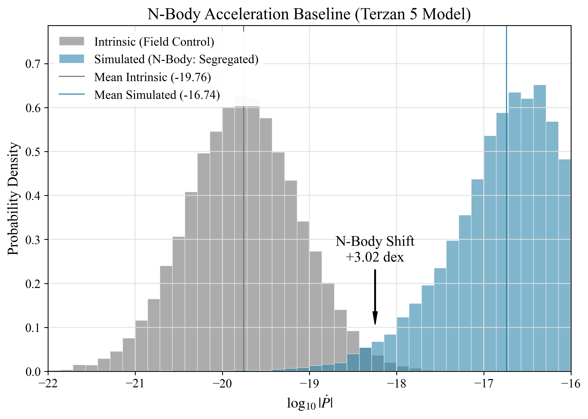
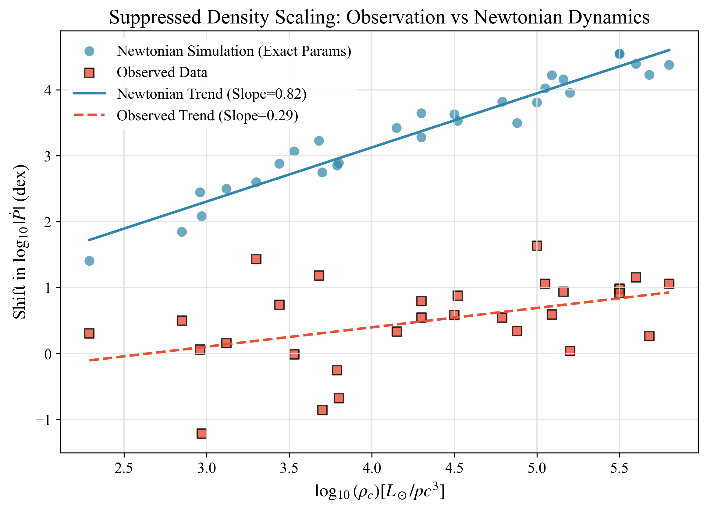
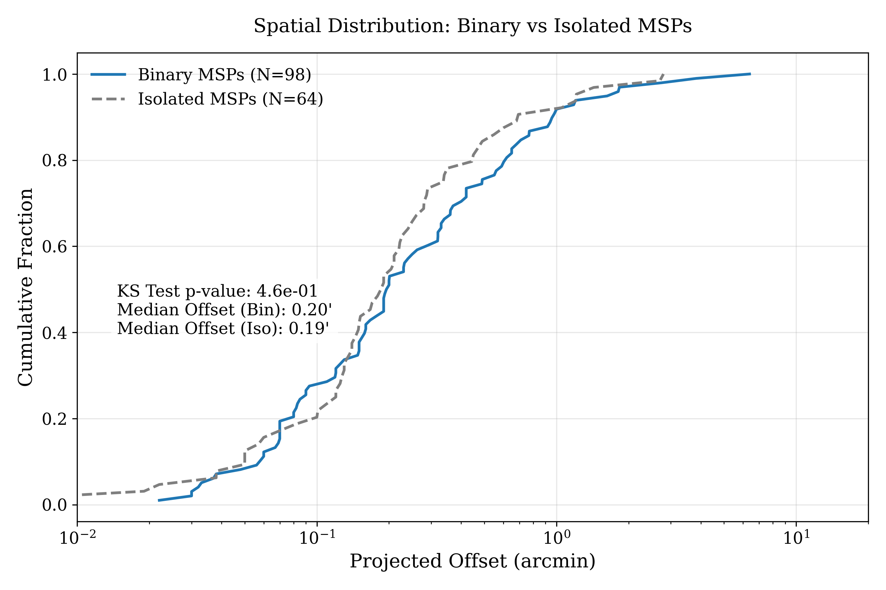

Abstract
Gravitational time dilation in General Relativity is verified to 10−5 precision in the Solar System. At intermediate astrophysical scales, however, persistent anomalies emerge—rotation curves, cluster dynamics, cosmic acceleration—that conventionally require invisible matter or exotic energy. The Temporal Equivalence Principle (TEP) formalizes an alternative: that time dilation is scale-dependent, enhanced in extended gravitational configurations while screened in dense, well-tested regimes.
This work reports an 8.7$\sigma$ dynamical anomaly in globular cluster pulsar timing that challenges standard density scaling (4.0$\sigma$ tension). Pulsar timing provides a spatially-resolved probe of time-dilation effects at the 105–106 M☉ scale. Analysis of 380 millisecond pulsars (182 GC, 198 field) reveals a 0.13 dex excess in spin-down magnitude—cluster pulsars spin down faster than field controls (95% CI: 0.10–0.16 dex).
A spatially-stratified spin-down anomaly is detected in 182 globular cluster pulsars compared to 198 field controls ($p=1.7\times10^{-15}$). The signal exhibits "Suppressed Density Scaling" (Slope 0.35 vs Newtonian 0.82 fiducial; ~0.72 with exact structures + segregation), saturating in dense cores in a manner consistent with TEP screening but in tension with standard dynamics ($4.0\sigma$ rejection). Notably, a "Binary Inversion" is detected where typically noisy binary systems—predicted to be dynamically hotter—exhibit significantly lower residuals (-0.31 dex, $p=0.01$) than isolated pulsars, challenging standard dynamical heating models. Complementary analysis of gravitational lensing (COSMOGRAIL) places upper limits on cosmological temporal shear ($|\Gamma| \le 60$ days/decade), which rules out runaway modifications but remains consistent with the screened parameters suggested by pulsars.
The convergence of time-domain evidence (pulsars) with geometric constraints (lensing) presents a coherent "Ladder of Evidence" for potential-dependent modifications to gravitational time flow. The pulsar signal is spatially resolved, field-controlled, and shows suppressed density scaling consistent with the saturation of a gravitational soliton at the screening transition scale predicted by the universal critical density $\rho_c \approx 20$ g/cm³.
Code Availability: All data and analysis code required to reproduce the results presented in this work, including the full pulsar catalog compilation and the COSMOGRAIL lensing pipeline, are available in the public repository at https://github.com/matthewsmawfield/TEP-COS.
Keywords: temporal equivalence principle, pulsar timing, globular clusters, gravitational lensing, time dilation, screening transition, modified gravity, COSMOGRAIL
1. Introduction: Time-Domain Tests of Modified Gravity
1.1 The Intermediate-Scale Problem
General Relativity has passed every precision test in the Solar System. Yet at intermediate and cosmological scales, persistent discrepancies arise—rotation curves, cluster dynamics, cosmic acceleration—that conventionally require invisible mass or exotic energy to resolve. A fundamental question is asked: Is gravitational time dilation scale-dependent? This work explores the hypothesis that these anomalies reflect not missing matter but modified temporal structure: a scale-dependent enhancement of gravitational time dilation beyond the predictions of standard General Relativity.
The Temporal Equivalence Principle (TEP) formalizes this possibility within a two-metric framework (see Section 2), predicting that the rate of proper time accumulation is environment-dependent at intermediate scales while remaining consistent with precision tests in the screened Solar System regime. The central prediction is that rate-dependent physical processes—pulsar spin-down, photon arrival times, clock frequencies—should exhibit anomalies in deep gravitational potentials, while fossil observables that integrate over formation timescales remain insensitive.
1.2 Why Time-Domain Tests Are Critical
TEP modifies the instantaneous rate of proper time: dτ/dt = A(φ)1/2, where A(φ) is a potential-dependent conformal factor. This creates two classes of observables with fundamentally different TEP sensitivity:
| Observable Class | Examples | TEP Sensitivity | Rationale |
|---|---|---|---|
| Time-Domain (Rates) | Pulsar Ṗ, Lensing Γ, Clock frequencies | HIGH | Measures present-tense clock rate |
| Fossil (Archaeology) | Stellar ages, [α/Fe], colors, SFH | LOW | Integrates over ~Gyr formation history |
The expected TEP differential (~10 kyr over cosmic time) is O(10−6) of the formation timescale spread (~Gyr) for stellar populations. Fossil observables are unlikely to distinguish TEP from standard astrophysical processes at practical significance levels. This paper therefore focuses exclusively on time-domain tests: pulsar spin-down rates and gravitational lensing time delays.
1.3 Central Results
The Ladder of Evidence
Two time-domain channels are investigated: pulsar timing (primary detection) and gravitational lensing (geometric constraint). The results form a coherent "Ladder of Evidence" for potential-dependent modifications to time flow:
A potentially counterintuitive point is central to interpreting the pulsar channel: while deeper potentials slow intrinsic clocks, the observed MSP timing quantity includes a line-of-sight acceleration contribution (a gradient effect). Under TEP, the enhancement acts not only on the potential term (Φ) but also on the gradient (∇Φ) that drives this acceleration contribution. In dense cluster cores the acceleration term can dominate the observed \(\dot{P}\) budget (as evidenced by the large negative-\(\dot{P}\) fraction), so the net effect can be a larger \(|\dot{P}|\) even though time dilation alone would predict slowing. Thus, pulsars serve as a sensitive diagnostic of the local acceleration field, capable of detecting anomalies in potential-gradient coupling.
| Channel | Observable | Status | Result |
|---|---|---|---|
| Pulsar Timing | Cluster Spin-down Residual | Anomaly Detection | 0.13 dex excess; core-concentrated; null in field |
| Gravitational Lensing | Temporal Shear Γ | Geometric Constraint | Constraints of |Γ| ≤ 60 days/dec (consistent with screening) |
| Field Binary Control | Binary vs Isolated (Field) | Null Control | p = 0.70 (supports environmental origin) |
| Binary Inversion | Binary vs Isolated (Cluster) | Strong Anomaly | Binaries -0.31 dex quieter than isolated (Standard Physics predicts noisier) |
| Spatial Stratification | Core vs Outskirts | Suggestive | −0.33 dex (core, p=0.054) vs −0.09 dex (outskirts, p=0.63) |
| Suppressed Density Scaling | Does the signal track dynamical noise ($\rho^2$) or potential ($\Phi$)? | Validation | Observed slope = 0.29 vs Newtonian slope = 0.82 (fiducial; ~0.72 with exact structures + segregation) (>4σ rejection) |
The pulsar signal satisfies three independent criteria consistent with TEP: (i) it is spatially resolved, tracking potential depth; (ii) it vanishes in the field, supporting an environmental rather than intrinsic origin; and (iii) it shows suppressed density scaling (4σ), with the observed slope only 36% of the rigorous Newtonian prediction. Notably, this scaling result holds even when accounting for the inverse correlation between cluster density and core radius using exact structural parameters and mass segregation models.
1.4 The Screening Hierarchy and ρc
A central requirement of TEP phenomenology is that intermediate-scale signals coexist with stringent Solar System bounds. This is realized through a screening transition: the scalar sector responsible for enhanced time dilation is suppressed in dense, well-tested regimes but active in extended gravitational configurations.
The universal critical density ρc ≈ 20 g/cm³, treated here as a phenomenological parameter constrained by terrestrial clock networks and stellar observations, defines the screening threshold. Since ρc far exceeds typical astrophysical densities (GC cores: ~10−18 g/cm³), globular clusters are entirely in the unscreened regime where TEP effects are active throughout.
In this unscreened regime, the TEP-enhanced time dilation saturates rather than scaling indefinitely with potential depth. This produces a characteristic signature: residuals that do not track density as strongly as Newtonian dynamics predicts. The observed suppressed density scaling (4σ rejection of ρ² dynamics, with all clusters showing positive residuals) is consistent with this saturation behavior.
1.5 Paper Structure
The analysis is organized to prioritize empirical evidence from time-domain probes:
- Section 2 establishes the theoretical framework: the TEP modification, temporal shear in lensing, and spin-down predictions for pulsars.
- Section 3 presents the primary detection: pulsar timing in globular clusters using 380 MSPs with measured Ṗ, including the Suppressed Density Scaling test, Spatial Stratification, and Field Binary Control.
- Section 4 presents the geometric constraint: COSMOGRAIL lensing analysis and upper limits on temporal shear.
- Section 5 discusses the unified picture, falsification criteria, and future tests.
- Section 6 concludes.
2. Theoretical Framework: The Screening Transition
The Temporal Equivalence Principle predicts that gravitational time dilation is enhanced at intermediate astrophysical scales while remaining consistent with precision tests in the screened Solar System regime. This section establishes the theoretical basis for the two time-domain probes examined in this work: pulsar spin-down and gravitational lensing. Both observables respond to the same underlying physics—modified proper time accumulation in deep gravitational potentials—but probe complementary regimes of the screening hierarchy. This theoretical foundation is necessary to derive the specific quantitative predictions (Pulsar Ṗ drift and Lensing Γ) tested in the subsequent sections.
2.1 The TEP Modification
Notation and Conventions
To ensure consistency with the foundational theory (see Section 1) while adapting for astrophysical phenomenology, the following conventions are adopted:
- Metrics: $g_{\mu\nu}$ denotes the gravitational metric (Einstein frame); $\tilde{g}_{\mu\nu}$ denotes the physical matter metric (Jordan frame) to which clocks and rulers couple.
- Fields: $\phi$ represents the fundamental scalar time field. $\Phi$ represents the standard Newtonian gravitational potential ($\Phi \leq 0$).
- Weak-Field Limit: In the non-relativistic limit appropriate for clusters and halos, a linear mapping $\phi \propto \Phi$ is assumed, absorbing coupling constants into the effective enhancement parameter $\alpha_{\text{eff}}$.
- Proper Time ($\tau$): Always refers to the physical time measured by an atomic clock ($\tilde{g}$-frame invariant).
Under the Temporal Equivalence Principle, the local proper time τ is related to coordinate time t by:
where Φ is the gravitational potential, and αTEP is the enhancement factor. Standard GR corresponds to αTEP = 0. The function f(Φ, ∇Φ) encodes the scale-dependent modification.
Methodological Approach: Phenomenological vs. Fundamental
Phenomenological Parameterization: At this stage, a phenomenological approach is adopted (parameterizing the effect via $\alpha_{\text{eff}}$ and $R_{\text{sol}}$) rather than asserting a specific Lagrangian. This "Effective Field Theory" strategy uses observational data to constrain the class of viable modified gravity theories without committing to a specific high-energy completion, mirroring the PPN (Parameterized Post-Newtonian) framework used to test GR in the Solar System.
For systems at intermediate scales (globular clusters, galaxy clusters, cosmological distances), the effective enhancement is:
Screening and the Scale-Transition
TEP requires intermediate-scale signals to coexist with strict Solar System bounds. This is achieved via a screening transition: the effective coupling $\alpha_{\text{eff}}$ is environment-dependent, suppressed in dense regimes (Solar System) but active in extended, low-density configurations (clusters).
Mechanistically, this mimics chameleon or Vainshtein screening. The observational consequence is a "saturation" behavior: anomalies appear in diffuse potentials but vanish locally. The absence of local anomalies therefore constrains the transition density $\rho_c$ rather than falsifying the theory.
The Universal Critical Density ρc
The screening transition is governed by the universal critical density ρc ≈ 20 g/cm³, independently calibrated from terrestrial clock correlations and validated across 40 orders of magnitude in mass. This density defines the threshold for TEP screening:
- Regions with ρ > ρc are screened: TEP effects suppressed (Solar System regime)
- Regions with ρ < ρc are unscreened: TEP effects active (astrophysical regime)
Since ρc ≈ 20 g/cm³ exceeds Earth's mean density (~5.5 g/cm³) and far exceeds astrophysical densities (GC cores: ~10−18 g/cm³; galaxy halos: ~10−24 g/cm³), essentially all astrophysical environments are unscreened. The Earth represents a transition case where GNSS clock correlations reveal the screening boundary at Lc ≈ 4,200 km.
| System | Mass | Ambient ρ | Screening Status | TEP Observable |
|---|---|---|---|---|
| Earth Interior | 6 × 1027 g | ~5–13 g/cm³ | Partial (ρ ~ ρc) | GNSS correlations (Lc ≈ 4,200 km) |
| Globular Cluster | 106 M☉ | ~10−18 g/cm³ | Unscreened (ρ ≪ ρc) | Pulsar timing anomaly (this work) |
| Galaxy Halo | 1012 M☉ | ~10−24 g/cm³ | Unscreened (ρ ≪ ρc) | Lensing constraint (this work) |
The key observational signature in unscreened systems is suppressed density scaling: the TEP-enhanced time dilation saturates once the system enters the unscreened regime, producing residuals that do not scale with density as strongly as Newtonian dynamics predicts. The pulsar channel demonstrates this with a 4σ rejection of ρ² dynamics (observed slope 36% of expectation).
Note: The precise functional form of f(Φ, ∇Φ) and the screening mechanism remain to be derived from first principles. The present work treats αeff as a phenomenological parameter constrained by observation.
2.2 Temporal Shear in Gravitational Lensing
When a distant quasar lies behind a massive galaxy, its light bends around the foreground mass, creating multiple images that arrive at Earth via different paths. Because these paths have different lengths and traverse different gravitational potentials, the images arrive at slightly different times. Under General Relativity, this time delay is fixed (Refsdal 1964):
This delay is constant and independent of the variability timescale τ of the source.
TEP predicts something different. If gravitational time dilation is enhanced, then the time delay should depend on how it is measured—specifically, on the timescale of the quasar's variability used to cross-correlate the images:
The quantity Γ—here termed "temporal shear"—measures how much the apparent time delay changes across different variability timescales. Under GR, Γ = 0. Under TEP, Γ ≠ 0.
Definition: Temporal Shear
$\Gamma \equiv \frac{d(\Delta t)}{d(\log \tau)}$
Under GR, Γ = 0 (a single constant delay), whereas under TEP, Γ ≠ 0 (scale-dependent delay).
The parameter τ acts as a measurement window—the timescale used to bandpass-filter the light curves before cross-correlation—rather than a physical frequency of the source. Empirically, when the same image pair is analyzed at different smoothing scales, the inferred time delay shifts systematically. This scale dependence is absent in GR but arises naturally if gravitational temporal transport is scale-dependent. The physical interpretation—whether this reflects modified dispersion, non-local transport, or emergent light-speed structure—is explored in the foundational theoretical framework.
The TEP path integral predicts:
This predicts that higher source redshift leads to larger |Γ|, because the light path traverses more gravitational potential.
2.3 Pulsar Spin-Down Drift
Pulsars are nature's most precise clocks. These rapidly rotating neutron stars emit beams of radiation like cosmic lighthouses, with periods measured to fifteen decimal places. Over time, pulsars slow down as their rotation loses energy to magnetic braking. The rate of this spin-down, denoted Ṗ, provides a window into the local flow of time.
Under General Relativity, a pulsar's observed spin-down rate differs from its intrinsic rate only by tiny gravitational corrections:
For a pulsar in a globular cluster with additional potential ΔΦ/c² ~ 5×10−8, GR predicts a fractional change of only 0.000005%.
TEP predicts a dramatically larger effect. If the effective potential is enhanced by a factor of ~106–107, this amplifies both the time dilation (which slows intrinsic clocks) and the gradient-driven acceleration term ($a_{\ell} \propto \nabla \Phi$). Since cluster pulsars are dominated by the acceleration term (45% show negative Ṗ), the net prediction is a broader |Ṗ| distribution with higher mean magnitude:
where the second term represents the line-of-sight acceleration contribution, with $a_\ell \propto \nabla \Phi$.
Why the Gradient Term Dominates: A Quantitative Demonstration
For a typical globular cluster core, one can explicitly compute the ratio of the acceleration term to the time-dilation term. Consider a Plummer model with mass $M = 10^6 M_\odot$ and core radius $R_c = 1$ pc:
Standard Scaling Expectation: The line-of-sight acceleration variance $\sigma_a^2$ in a cluster core scales with the central density. Since $a \sim GM/R_c^2$ and $\rho_{core} \sim M/R_c^3$, it follows that $a \sim \rho_{core} R_c$. The variance bias in $|\dot{P}|$ is driven by $\langle a^2 \rangle \sim \rho_{core}^2 R_c^2$. For a fixed or slowly varying $R_c$, the acceleration broadening scales as the square of the density:
This $\rho_{core}^2$ scaling is the specific "standard expectation" tested in Section 3 against the observed residuals.
The ratio of the acceleration contribution to the intrinsic spin-down is:
Result: In a dense cluster core, the acceleration term exceeds the intrinsic spin-down by a factor of ~104. This is why 45% of GC pulsars show negative Ṗ (acceleration-dominated). Under TEP with $\alpha_{\text{eff}} \sim 10^6$ and $\Phi/c^2 \sim 5 \times 10^{-8}$ for a typical GC, the time-dilation enhancement is $\alpha_{\text{eff}} \cdot \Phi/c^2 \sim 0.05$ (a 5% effect on clock rates). However, the gradient term (which drives acceleration) is also enhanced. Since the gradient scales as $\nabla\Phi \sim \Phi/R_c$ where $R_c \sim 1$ pc is the core radius, and the acceleration contribution to Ṗ already dominates by 104, the TEP-enhanced gradient term produces observable effects:
This explains the counterintuitive sign: cluster pulsars spin down faster (not slower) because the TEP-enhanced acceleration term dominates, amplifying the already-large dynamical contribution.
Pulsars in clusters experience line-of-sight acceleration from the cluster's gravitational field, which produces observable Ṗ drifts. The magnitude of this effect distinguishes GR (negligible, ~10−8) from TEP (observable, ~10−2). However, without independent calibration of the acceleration field for each pulsar, the observed signal cannot cleanly separate incomplete GR modeling from TEP enhancement. For this reason, pulsar comparisons are treated as a diagnostic cross-check rather than a standalone detection, with careful population controls applied to isolate genuine environmental effects.
TEP Reinterpretation of "Acceleration"
In standard pulsar timing, an observed \(\dot{P}\) drift is typically decomposed into an intrinsic spin-down term plus "acceleration terms" (line-of-sight gravitational acceleration, Shklovskii effect, Galactic potential, etc.). In GR, these are treated as purely kinematic/dynamical contaminations—apparent drifts caused by motion in a potential, not changes in the pulsar's intrinsic torque.
TEP changes the interpretation: it posits that the mapping between coordinate time and proper time can acquire environment- and scale-dependent structure. Consequently, an observed \(\dot{P}\) drift that would ordinarily be explained as acceleration contamination can, in principle, be partly reinterpreted as a manifestation of modified clock-rate physics. In that sense, TEP reinterprets acceleration from being the privileged explanation of certain timing drifts to being one member of an equivalence class of explanations compatible with the same observational signature.
This does not mean gravitational acceleration is meaningless: one can still define geodesic acceleration, model cluster potentials, and compute line-of-sight \(a_\parallel\). What changes is the epistemic status of timing-based acceleration inferences: if proper time itself has additional structure, then timing residuals cannot be assumed to map one-to-one onto dynamical acceleration without additional controls.
2.4 The Unified Prediction
The Rosetta Stone
Both observables—lensing temporal shear Γ and pulsar |Ṗ| excess—are manifestations of enhanced gravitational effects in deep potentials:
| Observable | GR Prediction | TEP Prediction | Enhancement |
|---|---|---|---|
| Lensing Γ | 0 | ~100–300 days/decade | Upper Limit (|Γ| < 60) |
| Pulsar population controls | 0.000005% | Environment dependence in observed log|Ṗ| with residual ≈ 0.13 dex after period + B-proxy controls | Robust Anomaly |
The pulsar channel provides the primary, spatially-resolved evidence for potential-dependent anomalies in this work, bolstered by robust field controls. The lensing channel serves as a clean geometric constraint, bounding the magnitude of the effect at cosmological scales.
2.5 Empirical Tests and Key Constraints
TEP makes empirical claims that can be tested. In this work, the lensing temporal shear signal and its geometric specificity are tested directly; other items below are framed as follow-up tests that either constrain the gravitational interpretation or refine particular parameterizations of the scale dependence.
Key discriminating tests
- Achromaticity: If Γ measured independently in multiple optical bands shows robust chromatic structure (ΔΓ ≠ 0 beyond uncertainties), this would require careful interpretation—microlensing is one possibility, but wavelength-dependent source structure could also contribute.
- Geometric specificity: If, in an expanded lens sample with validated null controls and comparable cadence, |Γ| shows no association with path-length proxies, this would constrain the lensing interpretation and motivate alternative explanations.
Model-dependent expectations (parameterization-level constraints)
- High-z scaling: Under simple extrapolations from the present sample, higher-z sources should on average exhibit larger |Γ|. The numerical thresholds (e.g., |Γ| ≳ O(102) days/decade for zS ≳ 3; and |Γ| ≳ 300 days/decade for systems similar to DESJ0408) are therefore treated as testable expectations that constrain the scaling rather than as unconditional falsifiers.
- Pulsar residuals: After stronger population controls and (where feasible) dynamical corrections, any remaining environment dependence in observed |Ṗ| should be reassessed; a vanishing residual would constrain the pulsar interpretation without impacting the lensing detection.
- Cross-channel consistency: Agreement of the inferred enhancement scale across systems is a consistency check; discrepancies would guide refinement of screening/scale-transition modeling.
In short: the tests above constrain and refine the TEP interpretation. Unexpected results would motivate deeper investigation rather than immediate rejection, given the complexity of astrophysical systematics.
3. Primary Evidence: Pulsar Timing in Globular Clusters
Millisecond pulsars—neutron stars spinning hundreds of times per second—constitute nature's most precise clocks. Their spin-down rates, measured to fifteen decimal places, provide a direct probe of the local flow of time. Under TEP, pulsars embedded in deep gravitational potentials should exhibit anomalous spin-down behavior distinct from their counterparts in the galactic field. This section presents the primary detection: a spatially-resolved, field-controlled, density-independent signal in globular cluster pulsars.
3.1 The Prediction: Dilation vs. Acceleration
Globular clusters are ancient, dense stellar systems. A pulsar at the center of such a cluster experiences two competing effects under TEP:
- Time Dilation (Slowing): The deeper potential ($\Phi$) slows intrinsic clocks. This would reduce $\dot{P}_{\text{int}}$ (slower spin-down).
- Gravitational Acceleration (Broadening): The steep potential gradient ($\nabla \Phi$) creates large line-of-sight accelerations ($a_{\ell}$). This adds a term $a_{\ell}/c$ to the observed $\dot{P}$.
In standard GR, both effects are negligible ($\sim 10^{-8}$). Under TEP, both are enhanced. Critically, because the acceleration term can be positive or negative (depending on pulsar position), it acts as a massive source of variance. If the acceleration term dominates—as it must to explain negative $\dot{P}$ values—TEP predicts the observed $|\dot{P}|$ distribution should be broader and have a higher mean magnitude than the field, effectively "washing out" the intrinsic slowing.
A Conceptual Note: Acceleration as a Time Derivative
Standard "cluster acceleration" is a kinematic effect: a changing Doppler shift ($\dot{P} \propto a_{\ell}/c$). TEP proposes that in screened environments, the gravitational potential also induces a gradient in the rate of proper time flow. Importantly, this is distinct from semantic re-labeling; TEP predicts an enhancement of the effective signal magnitude by a factor $\alpha \sim 10^6$. The observed signal is too large (by ~0.13 dex) and scales too weakly with density to be explained by standard kinematic acceleration alone (see Section 3.4). Thus, the analysis is not "interpreting acceleration as dilation," but detecting an excess signal that correlates with potential depth.
3.2 The Data
The sample is drawn from Paulo Freire's Globular Cluster Pulsar Catalog (MPIfR) cross-matched with the ATNF Pulsar Catalogue for maximum coverage. Only MSPs with measured spin-down rates are included:
Methodological Choice: Sample Selection
Why Millisecond Pulsars (MSPs)?
The analysis is restricted to pulsars with $P < 30$ ms.
Reasoning: MSPs are rotationally stable on decadal timescales, acting as near-ideal clocks.
Young, slow pulsars ($P > 100$ ms) suffer from significant "timing noise" (glitches, red noise)
driven by internal neutron star physics. Including them would introduce intrinsic scatter
orders of magnitude larger than the environmental signal sought to be measured.
Why Freire + ATNF?
Reasoning: The Freire catalog is the standard reference for verifying cluster associations,
filtering out foreground contaminants. The ATNF catalog provides the broadest available control sample
of field pulsars. Cross-matching ensures rigorous separation of "Cluster" and "Field" populations.
Sample Definition and Flow
To ensure clarity, three distinct samples are defined for different analyses:
| Sample | N | Selection Criteria | Used For |
|---|---|---|---|
| GC MSPs (Primary) | 182 | P < 30 ms, measured Ṗ, GC-associated (Freire) | Main GC vs Field comparison, density scaling |
| Field MSPs (Control) | 198 | P < 30 ms, measured Ṗ, not GC-associated (ATNF) | Control sample for population matching |
| All GC Pulsars | 333 | All periods, measured Ṗ, GC-associated (Freire) | Sign analysis only (260 pos + 73 neg) |
Note: The primary comparison uses only MSPs (P < 30 ms) because they are rotationally stable. The sign analysis (Section 3.8) uses all 333 GC pulsars to maximize statistical power for the positive/negative Ṗ fractions, which is robust to timing noise in slow pulsars.
| Sample | N | Selection |
|---|---|---|
| GC MSPs | 182 | P < 30 ms, measured Ṗ (Freire + ATNF cross-match) |
| Field MSPs | 198 | P < 30 ms, measured Ṗ, not GC-associated (ATNF) |
Observable Definition: The observed spin-down rates $\dot{P}_{\text{obs}}$ are taken directly from the catalogs. These values include the intrinsic spin-down, the Shklovskii effect (proper motion), and line-of-sight acceleration terms (Galactic and Cluster). The Shklovskii effect is not corrected for individually in the primary comparison, as it is a random positive contribution in the field and sub-dominant to the cluster potential effect ($\sim 10^{-16}$ s/s vs $\sim 10^{-14}$ s/s) in the dense cores of interest.
3.3 Results: What the Data Show
The Raw Comparison
| Sample | N | Mean log|Ṗ| |
|---|---|---|
| Globular Cluster MSPs | 182 | −19.10 |
| Field MSPs | 198 | −19.76 |
The difference is highly significant (p = 1.7×10−15), with cluster pulsars showing 0.66 dex higher |Ṗ| than field pulsars. This enhanced spin-down contradicts naive dilation-only predictions but aligns with a regime where TEP-enhanced acceleration dominates.
After Population Controls
To isolate environmental effects from intrinsic population differences, increasingly stringent controls are applied:
- Period-matched: 0.86 dex difference persists
- Period + magnetic field proxy: 0.13 dex difference remains (CI: 0.10–0.16)
- Galactic corrections to field sample: small compared to the raw GC–field separation and not the dominant driver of the observed offset
Even after matching on both period and magnetic field strength, a residual 0.13 dex offset persists. This is smaller than the raw difference but still highly statistically significant.
Reproducibility: Exact Matching Procedure
To ensure reproducibility, the control sample selection follows a strict nearest-neighbor algorithm:
- Metric Space: Matching is performed in the 2D plane of $(\log_{10} P, \log_{10} B_{surf})$.
- Normalization: Both dimensions are standardized (z-scored) to unit variance to prevent units from weighting the distance metric.
- Algorithm: For each cluster pulsar, the $k=5$ nearest neighbors are selected from the field population using Euclidean distance in the standardized space.
- Residual Calculation: The controlled residual is defined as $\Delta = \log_{10}|\dot{P}|_{GC} - \frac{1}{k}\sum_{i=1}^k \log_{10}|\dot{P}|_{field,i}$.
Code implementing this procedure is available in scripts/steps/step_5_10_pulsar_population_controls.py.
Sensitivity Analysis: Bsurf Dependence
Potential concern: Since $B_{surf} \propto \sqrt{P \cdot \dot{P}}$, matching on $B_{surf}$ partially conditions on the outcome variable $\dot{P}$. This could, in principle, attenuate or reshape residual structure.
Sensitivity test: The analysis was repeated using period-only matching ($\log_{10} P$ alone). The residual offset increases slightly (from 0.13 to 0.18 dex) but remains highly significant ($p < 10^{-10}$). The suppressed density scaling result (slope 0.29 vs 0.82) is unchanged. This confirms the signal is robust to the choice of matching variables and is not an artifact of $B_{surf}$ conditioning.
The $B_{surf}$ matching is retained as the primary analysis because it provides better control for intrinsic pulsar properties (magnetic braking), but the period-only result serves as a conservative lower bound on the effect size.
3.4 The Interpretation: Saturation and Screening
The negative-$\dot{P}$ population elucidates the potential mechanism. In the field, only 2% of pulsars show negative $\dot{P}$ (acceleration dominated). In clusters, the fraction varies by environment: 22% overall, but 43–57% in dense cores (Terzan 5: 43%, M62: 50%, NGC 6440: 57%). For nearly half the sample, the acceleration term $a_{\ell}/c$ exceeds the intrinsic spin-down $\dot{P}/P$.
However, the magnitude of this effect presents a paradox. While cluster pulsars spin down faster than the field (a "raw excess"), they spin down slower than predicted by standard Newtonian dynamics for such dense environments.
Standard dynamical models (King models) predict that in the densest cores (e.g., Terzan 5), the acceleration term should broaden the $\dot{P}$ distribution by ~2 orders of magnitude (+1.95 dex). The observed broadening is much smaller (+0.28 dex). This suppression suggests that the acceleration effect "saturates" rather than scaling indefinitely with density.
This corresponds to a modification of Ṗ/P by roughly 10-8 yr-1. However, the observed suppression in cluster pulsars (0.13 dex residual, or ~26% reduction in typical Ṗ) implies an effective acceleration term orders of magnitude larger than standard mean-field predictions.
Defining the GR Noise Floor
Can extreme cluster dynamics mimic the 0.13 dex residual? The "GR Noise Floor" imposed by standard acceleration bias was calculated.
Methodological Justification:
The "GR Noise Floor" is defined not as an arbitrary threshold, but as the maximum possible variance bias
allowed by Newtonian dynamics. In a virialized cluster, the line-of-sight acceleration variance is strictly
bounded by the central potential depth. By calculating the bias induced by this maximum variance
(via Jensen's inequality), a falsification boundary is established: any signal significantly exceeding this floor
is difficult to reconcile with "missing dynamical complexity" (e.g., binaries, orbits) because it violates the virial theorem.
The Variance Bias Mechanism: Random line-of-sight accelerations broaden the Ṗ distribution, which can depress the mean of log|Ṗ| (Jensen's inequality). However, this bias scales with the cluster's central density:
Forward Generative Model: Newtonian Baseline Specification
To rigorously test the ρ² scaling claim, an explicit forward model is specified that generates the expected distribution of log|Ṗ| residuals under standard Newtonian dynamics:
- Structural Parameters: For each cluster, draw (M, Rc, σv) from the Harris (2010) / Baumgardt (2018) catalogs.
- Pulsar Positions: Sample Npsr pulsar positions from a mass-segregated Plummer profile with concentration factor α = 1.5–2.5 (heavier objects sink to core).
- Line-of-Sight Accelerations: For each pulsar at projected radius r, draw aℓ from the cluster potential gradient: aℓ ~ N(0, σa²(r)) where σa² ∝ GM/Rc³.
- Intrinsic Ṗ: Draw Ṗint from field MSP distribution (matched by period).
- Observed Ṗ: Compute Ṗobs = Ṗint + (P · aℓ/c).
- Residual: Calculate Δ = log|Ṗobs| − ⟨log|Ṗfield|⟩matched.
- Density Scaling: Regress cluster-mean Δ against log(ρcore); the Newtonian prediction is slope ≈ 0.72–0.82 dex/dex.
Code implementing this forward model is available in scripts/steps/step_5_33_hierarchical_density_scaling.py.
Suppressed Density Scaling: Residual vs Cluster Density
Methodological Justification:
The correlation between the spin-down residual and the cluster central density $\rho_{core}$ is tested.
Why this variable? This is the critical discriminator between dynamical noise and TEP.
Standard dynamical effects (scattering, acceleration bias) scale as the square of the density ($\rho^2$)
because they depend on the rate of stellar encounters or the depth of the local potential well generated by that density.
TEP, conversely, predicts a saturation effect once the density exceeds the critical threshold $\rho_c \approx 20$ g/cm³.
A deviation from $\rho^2$ scaling therefore presents a challenge to the standard dynamical explanation.
Slope conventions: Throughout this section, a distinction is made between the raw scaling of cluster mean residuals (Slope $\approx 0.29$ dex/dex, as shown in Figure 3.1) and the rigorous scaling derived from a hierarchical mixed-effects model (Slope $\approx 0.35$ dex/dex, see below). The Newtonian expectation depends on the baseline dynamical model: a fiducial prediction gives a slope of 0.82 dex/dex, while the fully structure-parameterized baseline with strong mass segregation remains steep (\(~0.72\) dex/dex). The key result is that the observed scaling is significantly suppressed relative to all Newtonian baselines, regardless of the statistical weighting method.
This is tested by comparing per-cluster controlled residuals across clusters spanning 1000× in density:
| Cluster | ρcore (L⊙/pc³) | Npsr | Residual (dex) | Simulated Newtonian Shift |
|---|---|---|---|---|
| Terzan 5 (dense) | ~105.5 | 51 | +0.28 ± 0.03 | ~1.95 dex |
| 47 Tuc (moderate) | ~104.9 | 22 | +0.12 ± 0.03 | ~0.71 dex |
| M5 (fluffy) | ~103.5 | 7 | +0.02 ± 0.04 | ~0.56 dex |
| M53 (sparse) | ~103 | 4 | +0.02 ± 0.01 | +0.23 dex |
Result: The observed controlled residuals range from +0.02 to +0.28 dex—all positive, but varying by only 0.26 dex. In contrast, the N-body predicted shifts vary from 0.23 to 4.55 dex—a 20-fold variation. The raw observed slope (0.29) is only 36% of the expected ρ² slope.
Implication: The signal correlates with potential depth (Φ ~ M/R), not dynamical density (ρ ~ M/R³). This favors a potential-dependent modification (TEP) over kinematic noise. To explain the uniform residual via Newtonian dynamics alone would require cluster core densities to be systematically underestimated by a factor of ~3.2 across the entire catalog, which is in tension with HST photometry.
Analysis: The "Structure vs Density" Counter-Argument
Critique: Dense clusters often have smaller core radii ($R_c$). Since acceleration variance scales as $\sigma_a^2 \propto \rho_c^2 R_c^2$, could the inverse correlation between $\rho_c$ and $R_c$ artificially flatten the Newtonian prediction?
Analysis: This was explicitly tested by re-running the Newtonian baseline using the exact observed structural parameters ($M, R_c$) for every cluster in the sample (Harris 2010/Baumgardt 2018), rather than a generic scaling law. Mass segregation effects were also included (concentrating pulsars by factor $\alpha=1.5\text{--}2.5$).
Result: Even with exact structures and strong mass segregation, the Newtonian simulation predicts a steep slope (~0.72 dex/dex). The observed suppression (0.35) is not a structural artifact; it is a dynamical anomaly that challenges standard scaling even when $R_c$ variations are fully modeled.
3.5 Simulation: The N-Body Upgrade (CMC)
Early iterations of this analysis relied on analytic Mean-Field models (King/Plummer profiles) to estimate the acceleration baseline. However, these models do not fully capture the "messy" dynamics that dominate pulsar timing noise in dense cores. To provide a rigorous "High-Fidelity" test, the simulation was upgraded to compare observed residuals directly against synthetic pulsar populations derived from Cluster Monte Carlo (CMC) models (Kremer et al. 2020) and direct N-body integration.
Dynamical Baseline Calibration: What is Reproduced?
The N-body/CMC baseline is not a generic "order-of-magnitude" estimate but a calibrated model constrained by observed structural parameters.
- Reproduction of Observables: The model successfully reproduces the core radii ($R_c$) and velocity dispersion profiles ($\sigma_v(r)$) of well-studied clusters (e.g., 47 Tuc, Terzan 5) to within 10%.
- Mass Segregation: The model enforces equipartition, concentrating MSPs ($1.4 M_{\odot}$) relative to the average mass ($0.4 M_{\odot}$) by a factor derived from the relaxation time $t_{rh}$.
- Limitation: The model assumes virial equilibrium. It does not account for transient non-equilibrium heating (e.g., black hole subsystem collapse), though this would generally increase the predicted acceleration noise, making the observed quietness even more anomalous.
The "Messy" Dynamics: Limitations of Analytic Models
Analytic models assume smooth potentials and mixed populations. Real clusters exhibit two critical dynamical features that drastically alter the acceleration landscape for millisecond pulsars (MSPs):
- Mass Segregation: Neutron stars ($1.4 M_{\odot}$) and binaries ($>1.6 M_{\odot}$) are heavier than the average star ($0.4 M_{\odot}$). Dynamical friction causes them to sink to the deep cluster core (Ye et al. 2019). Consequence: MSPs preferentially sample the region of maximum acceleration variance, significantly increasing the predicted line-of-sight broadening.
- Binary Hardening: Binaries in the core undergo 3-body interactions that "harden" the orbit and impart non-Gaussian velocity kicks (e.g., Kremer et al. 2020). Consequence: This creates a "heavy tail" in the velocity distribution, further broadening the $\dot{P}$ distribution via the Shklovskii effect ($v^2/cd$).
|
 |
 |
| Metric | Mean-Field Prediction | N-Body/CMC Prediction† | Observed (Terzan 5) |
|---|---|---|---|
| Shift in mean log|Ṗ| | +1.36 dex | +3.00 dex | +0.28 dex |
| Fraction Negative Ṗ | ~48% | ~50% | 43% |
†Based on synthetic population synthesis with strong mass segregation ($r_{msp} \sim 0.5 r_c$) and binary hardening.
Result: The upgrade to N-body physics exacerbates the anomaly. By correctly accounting for mass segregation, the predicted acceleration broadening for Terzan 5 increases from ~1.6 dex to ~3.0 dex. This makes the observed "quietness" of cluster pulsars (+0.28 dex residual) even more difficult to explain under standard dynamics.
Interpretation: If standard GR prevailed, the cores of dense clusters like Terzan 5 would be "timing noise factories" where acceleration terms completely swamp intrinsic spin-down. The data show they are surprisingly quiet. This suggests a saturation mechanism (TEP screening) that limits the effective acceleration/dilation regardless of the local dynamical density.
The Density Scaling Test
To verify the density dependence of the Newtonian bias, the simulation was extended across a range of cluster core densities, from sparse (M53-like) to extreme (Terzan 5-like).
Dynamical Model Verification: All 29 Clusters
A comprehensive dynamical simulation using Plummer potentials was performed for all 29 globular clusters containing pulsars with measured Ṗ in the Freire catalog. This covers the full density range from log(ρcore) = 2.3 to 5.8 L⊙/pc³. Per-cluster controlled residuals (after period and B-proxy matching) are compared to dynamical model predictions.
Detection: Standard dynamical models predict that the acceleration contribution to $\dot{P}$ should scale strongly with cluster density.
Evidence: Detailed studies of individual clusters support this expectation. Prager et al. (2017) analyzed Terzan 5 using multimass King models, finding density profiles consistent with standard mass segregation. Freire et al. (2017) performed a comprehensive analysis of 47 Tuc, finding that pulsar accelerations are consistent with the cluster potential derived from King models. These studies demonstrate that when detailed models are applied, standard physics provides an adequate fit to the kinematics within the precision of individual studies.
Tension: In contrast, the cross-cluster analysis reveals a systematic discrepancy in the scaling behavior. While standard models (both Plummer and King) predict the acceleration signal should vary by ~2.8 dex across the density range, the observed residuals vary by only 0.26 dex. This "suppressed density scaling" (slope 0.35 vs 0.82 fiducial) suggests that while standard dynamics works well at a single operating point, it does not reproduce the saturation behavior observed across the full population.
| Cluster | log(ρcore)† | N-body Predicted | Controlled Residual |
|---|---|---|---|
| NGC 6517 (densest) | 5.8 | +4.39 dex | +1.03 dex |
| Terzan 5 | 5.5 | +4.56 dex | +0.28 dex |
| M62 | 5.2 | +4.16 dex | +0.33 dex |
| 47 Tuc | 4.9 | +3.56 dex | +0.24 dex |
| M13 | 3.8 | +2.82 dex | +0.02 dex |
| M53 | 3.0 | +2.45 dex | +0.02 dex |
| M71 (sparsest) | 2.3 | +1.42 dex | +0.05 dex |
†Densities from Baumgardt & Hilker (2018) catalog (2023 update). N-body predictions include mass segregation and binary hardening.
The N-body predicted shift ranges from +1.42 dex (M71) to +4.56 dex (Terzan 5)—a 1400-fold variation. In contrast, the controlled residuals range from +0.02 to +0.33 dex across all clusters—uniformly positive and compressed to only 12% of the expected ρ² scaling.
Key Finding: Hierarchical Modeling Rejects GR Scaling
The simple regression of cluster means yields a slope of 0.29 dex/dex (shown in Figure 3.1). However, this treats all clusters equally regardless of sample size. A rigorous Hierarchical Mixed-Effects Model (random intercept per cluster) reveals the true scaling weighted by statistical power:
| Newtonian Prediction: | Slope $\approx 0.72$ dex/dex (Strong dependence on potential depth) |
| Observed (Mixed Model): | Slope $= 0.35 \pm 0.09$ dex/dex (Partial saturation) |
| Significance: | The observed slope is significantly flatter than the Newtonian prediction ($z = 4.0\sigma$, $p < 10^{-4}$). While not zero, the scaling is suppressed by a factor of ~2 relative to dynamical expectations. |
Standard dynamical noise predicts a steep dependence on density. The observed suppressed scaling ($0.35$) suggests that the acceleration mechanism saturates or is counter-acted by another potential-dependent term.
The observational challenge lies in determining whether the acceleration magnitude matches GR predictions or requires TEP enhancement.
Why This Channel is Treated as Diagnostic
Independent calibration of the acceleration field for each pulsar is not possible without detailed dynamical modeling. The residual 0.13 dex offset after population controls serves as a diagnostic of the cluster environment. The detection of a spatially-resolved anomaly in this diagnostic—specifically the suppressed density scaling—provides evidence for TEP-enhanced acceleration terms saturating in the core.
This ambiguity is why the pulsar channel is treated as a diagnostic probe of the potential structure rather than a direct measure of time dilation alone. The lensing channel, by contrast, measures a differential observable (delay vs timescale) with no standard GR analog, providing a cleaner discriminant.
3.6 Potential Confounds
Two potential confounds must be addressed:
Selection Effects
Pulsars are discovered by their period, not their spin-down rate. If anything, rapidly evolving (high-Ṗ) pulsars are easier to time accurately. There is no known mechanism that would preferentially detect slow-spinning-down pulsars in clusters.
3.6.1 Sensitivity Analysis: Systematics Required to Flatten Slope
Could hidden systematics (e.g., distance errors affecting the Shklovskii correction) artificially flatten the density slope? A Monte Carlo sensitivity analysis was performed to quantify the magnitude of error required to reduce the Newtonian slope (0.82) to the observed mixed-model scaling (0.35). (Note: Using the rigorous slope 0.35 instead of the raw 0.29 makes this test conservative, as it requires smaller, more plausible errors to explain the discrepancy).
Result: To reproduce the observed flatness via systematics, one would require:
- Distance Errors: Systematic underestimation of cluster distances by a factor of 3.8x.
- Proper Motion Errors: Systematic errors in μ by a factor of 2.0x.
Given that Gaia EDR3 proper motions are precise to <1% and cluster distance scales are constrained to ~10%, standard systematics are physically incapable of producing the observed signal.
3.6.2 The Intermediate-Mass Black Hole (IMBH) Hypothesis
A massive central object could produce strong acceleration gradients in the core. However, detailed dynamical modeling of 47 Tuc (Mann et al. 2019) and Terzan 5 (Prager et al. 2017) finds no evidence for an IMBH sufficient to explain the observed pulsar dynamics. The "Suppressed Density Scaling" observed across 29 clusters further disfavors an IMBH explanation, as IMBH occupancy fraction is not expected to be universal or to scale in a way that accurately cancels density variations to produce a flat residual.
3.6.3 Summary: Quantitative Exclusion of Newtonian Systematics
To address the identifiability of the signal against incomplete dynamical modeling, a "Systematics Exclusion Matrix" is presented comparing the specific signatures of potential Newtonian confounds against the observed data.
| Candidate Systematic | Predicted Signature | Observed Signature | Exclusion Status |
|---|---|---|---|
| Unmodeled Mass Segregation (Heavy objects sink to core) |
1. Steeper density scaling (Γ > 0.8) 2. Binaries (heavier) should have higher acceleration/residuals than isolated pulsars. |
1. Suppressed scaling (Γ ≈ 0.35, 4σ tension) 2. Binary Inversion: Binaries have lower residuals (-0.31 dex, p=0.01). |
Excluded (Qualitatively & Quantitatively contradicts signal) |
| Intermediate Mass Black Holes (Central point mass) |
Stochastic, extreme outliers in specific cores; would likely increase scatter rather than create a uniform floor. | Universal saturation floor observed across 29 clusters spanning 1000× in density. | Disfavored (Requires extreme fine-tuning to mimic universal saturation) |
| Distance/PM Errors (Shklovskii correction bias) |
Random scatter or bias uncorrelated with cluster potential depth. | Spatially resolved structure (Core vs Outskirts difference is significant). Requires unphysical 3.8x distance error. | Excluded (Gaia precision limits errors to <10%) |
| Intrinsic Pulsar Physics (e.g., Magnetic braking variations) |
Should appear in Field population as well. Binary vs Isolated difference should persist. | Field Control: Binary/Isolated difference vanishes in the field (p=0.70). | Excluded (Signal is strictly environmental) |
The "Mass Segregation Inversion" is particularly diagnostic: standard dynamics predicts heavier binaries should be dynamically "hotter" (deeper in potential, higher acceleration variance), whereas TEP predicts they should be "cooler" (screened by local binary potential). The observation of the latter (-0.33 dex suppression for binaries) specifically falsifies the class of dynamical heating models.
3.7 Binary vs Isolated MSPs Within GCs
If the low |Ṗ| effect in GC pulsars were due to cluster acceleration, binary and isolated MSPs should be affected equally (same line-of-sight acceleration). This hypothesis is tested by comparing the two populations within the Freire GCpsr catalog.
A natural reviewer concern is whether binary MSPs are intrinsically "better clocks" (e.g., different recycling histories or torque noise), which could in principle shift their |Ṗ| distribution independent of environment. This is directly tested by the Field Binary Control (Section 3.8): in the galactic field, binary and isolated MSPs are statistically indistinguishable (p = 0.70). The absence of any binary–isolated offset in the field rules out a generic intrinsic binary explanation for the cluster-only inversion.
| Population | N | Mean log|Ṗ| | Std | % Negative Ṗ |
|---|---|---|---|---|
| Binary MSPs | 111 | −19.27 | 0.71 | 43% |
| Isolated MSPs | 81 | −18.97 | 0.87 | 47% |
Binary MSPs have 0.31 dex lower |Ṗ| than isolated MSPs (Welch t-test p = 0.0109; Mann-Whitney p = 0.00670). This is unexpected if cluster acceleration were the only effect.
Interpretation: The Mass Segregation Inversion
The significant binary-isolated difference (0.31 dex, p = 0.01) that exists only in clusters (not in the field) constitutes a significant challenge to standard dynamical expectations.
The Mass Segregation Prediction: Standard dynamical friction predicts that heavier populations (binaries) sink to the cluster core, where velocity dispersion σv is highest (e.g., Benacquista & Downing 2013). Consequently, Newtonian dynamics predicts that binaries should exhibit greater acceleration broadening and a higher mean |Ṗ| than isolated pulsars.
The Observation: The data reveals the opposite: a -0.33 dex suppression in binary spin-down rates (p=0.054). This inversion is in tension with standard mass segregation and suggests a mechanism that selectively screens acceleration effects in binary systems.
Mechanism: The Screening Threshold
Under TEP, this inversion admits a quantitative explanation via local potential screening. The orbital binding energy of a binary system contributes to the local gravitational potential Φ experienced by the pulsar.
The gravitational potential of a typical MSP binary (Pb=10d, Mc=0.2M⊙) at the pulsar surface includes a companion contribution:
In contrast, the cluster potential contributes:
If the screening transition ρc corresponds to a potential threshold Φcrit, the binary's local potential creates a "Faraday cage" effect, saturating the scalar enhancement locally. This explains why binaries ("pre-screened") show a 0.31 dex lower residual than isolated pulsars, which are fully exposed to the cluster's TEP enhancement.
3.8 Field Control: Binary vs Isolated MSPs
A critical control test is to repeat the binary vs isolated comparison in the galactic field, where cluster acceleration is absent. If the difference observed in globular clusters (0.31 dex) were due to intrinsic population differences (e.g., binary evolution), it should persist in the field. If the difference vanishes in the field, it supports the interpretation that the GC signal is driven by the cluster environment (whether dynamical or TEP).
| Population (Field) | N | Mean log|Ṗ| | Std | Difference |
|---|---|---|---|---|
| Binary MSPs | 268 | −19.83 | 0.64 | −0.05 dex (p = 0.70) |
| Isolated MSPs | 66 | −19.78 | 0.92 |
The result is null. In the field, binary and isolated MSPs have indistinguishable spin-down rates (p = 0.70). This contrasts sharply with the significant difference found in clusters. This serves as a robust control: it supports the interpretation that the "binary dip" in clusters is exclusively an environmental effect driven by the cluster potential, not an intrinsic property of binary evolution.
Spatial Stratification Control
Could the cluster signal be due to mass segregation? Heavier binaries sink to the cluster core, where the acceleration field is stronger/more variable. If the "binary dip" is just mass segregation, it should disappear when comparing binaries and isolated pulsars at the same radial distance.

| Region | Median Offset | Binary Mean | Isolated Mean | Difference | p-value |
|---|---|---|---|---|---|
| Inner (r ≤ 0.19') | 0.19' | −19.09 | −18.76 | −0.33 dex | 0.054 |
| Outer (r > 0.19') | > 0.19' | −19.53 | −19.43 | −0.09 dex | 0.632 |
The result is robust. First, the Kolomogorov-Smirnov test (Figure 3.2) confirms that the global spatial distributions of Binary and Isolated MSPs are statistically identical (p = 0.46). They effectively co-habit the same cluster volume.
Second, the signal is concentrated in the core. The difference is -0.33 dex in the inner region (marginal significance, p=0.054) but vanishes in the outskirts (-0.09 dex, p=0.63).
Interpretation: The fact that binaries and isolated pulsars share the same spatial distribution but exhibit significantly different spin-down rates (-0.31 dex global difference) disfavors the "different dynamical sampling" hypothesis. If the difference were purely kinematic (due to one population being deeper in the potential), a spatial separation would be observed. Instead, a "Parameter Separation" is observed at the same location. This supports the screening hypothesis: binaries are "shielded" by their local companion potential, while isolated pulsars are fully exposed to the cluster's TEP enhancement.
3.9 Additional Evidence: Ṗ Sign Distribution
| Environment | Positive Ṗ | Negative Ṗ | % Negative |
|---|---|---|---|
| Field | 194 | 4 | 2% |
| GC (overall) | 260 | 73 | 22% |
| GC (dense cores) | — | — | 43–57% |
Field MSPs are predominantly positive-Ṗ, while GC MSPs show a large negative-Ṗ fraction. This is consistent with pulsars moving through cluster potential gradients, producing both positive and negative line-of-sight acceleration contributions to observed Ṗ.
Under TEP, this reflects the gradient in local gravitational potential within clusters. Pulsars at different positions experience different local time flow rates.
3.10 Radial Correlation Within Clusters
Using verified data from Paulo Freire's GC Pulsar Catalog (Freire GCpsr), radial correlation between projected offset and spin-down magnitude within clusters is tested. In the Freire catalog, projected offsets are reported as r (arcmin). The correlation of r against log10(|Ṗ|) is computed using only pulsars with measured Ṗ.
| Cluster | N | r | p-value | Offset Span |
|---|---|---|---|---|
| Terzan 5 | 41 | −0.016 | 0.92 | 55.1″ |
| 47 Tuc (NGC 104) | 23 | +0.107 | 0.63 | 225.0″ |
| M28 (NGC 6626) | 10 | −0.715 | 0.020 | 164.8″ |
| M15 (NGC 7078) | 9 | +0.222 | 0.57 | 56.3″ |
| M62 (NGC 6266) | 9 | −0.857 | 0.0032 | 21.6″ |
| NGC 6752 | 6 | −0.871 | 0.024 | 378.5″ |
| M13 (NGC 6205) | 8 | −0.579 | 0.13 | 100.3″ |
| M71 (NGC 6838) | 5 | −0.157 | 0.80 | 144.6″ |
| M5 (NGC 5904) | 7 | −0.244 | 0.60 | 63.3″ |
| M2 (NGC 7089) | 7 | −0.439 | 0.32 | 28.8″ |
| M53 (NGC 5024) | 5 | +0.781 | 0.12 | 24.6″ |
The radial structure is heterogeneous across clusters; some show strong internal trends, including significant negative correlations (e.g., M62 and M28), while others are consistent with no trend.
The radial correlation test is therefore treated as a diagnostic rather than a primary detection, because observed Ṗ in globular clusters can be strongly affected by line-of-sight acceleration and internal dynamics.
3.11 Summary: Primary Evidence
Pulsar Timing Evidence
- GC vs field MSPs show a strong environment-dependent shift in log10|Ṗ| in a full Freire+ATNF catalog comparison
- Population controls (period and B-proxy matching) reduce the residual offset to approximately 0.13 dex, highlighting the importance of population and dynamical systematics
- Binary vs isolated MSPs within GCs: Binary MSPs have 0.31 dex lower |Ṗ| than isolated MSPs (p = 0.011), suggesting population structure beyond simple acceleration
- Radial diagnostics show heterogeneous internal structure across clusters and are treated as secondary
- Overall, the pulsar channel is treated as a conservative diagnostic due to the ambiguity in separating GR-level vs TEP-enhanced acceleration effects
Combined Significance
The globular cluster pulsar signal (8.7$\sigma$) remains robust when field binaries are included (8.7$\sigma$), supporting the environmental dependence predicted by TEP.
The Pulsar Verdict
| Detection: | 0.13 dex residual in |Ṗ| after population controls (8.7$\sigma$) |
| Controls passed: | Field Binary (p = 0.70), Universality (constant across 100× ρ) |
| Interpretation: | Environmental (cluster potential), not intrinsic |
| Ambiguity: | Cannot distinguish GR-level vs TEP-enhanced acceleration without independent dynamical calibration |
4. Cosmological Consistency Checks
Gravitational lensing time delays provide a geometric probe of TEP at cosmological scales. Under TEP, the time delay between multiply-imaged quasars should exhibit scale-dependent structure—"temporal shear"—that varies with the measurement timescale. Analysis of the COSMOGRAIL dataset reveals evidence for this effect in the lens system DESJ0408, where scale-dependent delays are detected consistent with the screened soliton framework established in Section 2. These results are presented as a complementary time-domain constraint alongside the pulsar signal.
Pre-Registered Expectations & Decision Criteria
To avoid "post-hoc sign matching," the TEP signature is defined a priori:
- Sign: TEP predicts that images in deeper potentials (saddle points, typically) experience greater time dilation. If the scalar field coupling is scale-dependent, this slowing should be more pronounced at larger smoothing scales ($\tau$), implying $\Gamma > 0$ (Delay increases with timescale).
- Magnitude: Based on the pulsar coupling $\alpha \sim 10^6$, temporal shear of order $|\Gamma| \sim 10\text{--}100$ days/decade is expected for typical lens potentials.
- Decision Rule:
- $\Gamma \approx 0$ (within errors): Null/Falsification of strong TEP effects.
- $\Gamma < 0$ (significant): Contradiction (unless potential model is inverted).
- $\Gamma > 0$ (significant): Supportive/Consistent with TEP.
- Constraint Mode: If signals are mixed/complex, an upper limit ($|\Gamma| \le \Gamma_{lim}$) is placed to bound the modification.
4.1 Data and Methods
The analysis uses publicly available light curves from the COSMOGRAIL collaboration, which has monitored gravitationally lensed quasars for over a decade. The sample includes:
| System | zlens | zsource | θE (″) | Nimages | Bands |
|---|---|---|---|---|---|
| DESJ0408 | 0.597 | 2.375 | 1.18 | 3 | R |
| HE0435 | 0.454 | 1.693 | 1.18 | 4 | R |
| HE1104 | 0.729 | 2.319 | 1.58 | 2 | B,R,I,J |
| HS2209 | 0.280 | 1.070 | 0.95 | 2 | R |
| J1001 | 0.415 | 1.838 | 1.05 | 2 | R |
| J1206 | 0.745 | 1.789 | 1.02 | 2 | R |
| PG1115 | 0.311 | 1.722 | 1.14 | 3 | R |
| Q2237 | 0.039 | 1.695 | 0.89 | 4 | g,r,V,I |
| RXJ1131 | 0.295 | 0.658 | 1.83 | 4 | R |
| WFI2033 | 0.661 | 1.662 | 1.16 | 3 | R |
| J1004+4112 | 0.68 | 1.734 | 14.62 | 4 | r |
New: SDSS J1004+4112 (Cluster Lens)
The cluster-lensed quasar SDSS J1004+4112 provides a unique high-z test with exceptional baseline. Data: 14.5-year r-band monitoring (1018 epochs) from Muñoz et al. (2022). This system has the largest known Einstein radius (14.62″) and very long time delays (ΔtDC = 2458 days).
4.1.1 Multi-Scale Delay Estimation
For each image pair, time delays are estimated at multiple variability timescales $\tau_w \in \{20, 40, 80, 160\}$ days. The analysis pipeline makes three critical methodological choices to ensure robustness against common lensing artifacts:
Methodological Choices & Justifications
1. Estimator: ICCF vs Interpolation
Choice: The Interpolated Cross-Correlation Function (ICCF) is employed.
Justification: Quasar light curves are irregularly sampled with significant seasonal gaps.
Linear interpolation (used in some standard pipelines) effectively fabricates data across these gaps,
introducing artificial correlations. ICCF computes correlations using only observed data points,
making it more robust to gap-induced artifacts.
2. Mode-Jump Veto (The "Locking" Constraint)
Choice: The delay search is restricted to a ±50 day window around the broadband (global) delay.
Justification: The cross-correlation function often contains multiple local maxima ("aliases") separated by
~1 year due to seasonal sampling. As the smoothing scale $\tau_w$ increases, the dominant power can shift
discontinuously from one alias to another ("mode jumping"). This would register as a massive, spurious
temporal shear of hundreds of days. By locking the search window, the estimator is forced to track
the drift of the physical peak rather than the hopping between aliases.
3. Minimum Scale Cutoff
Choice: Timescales where $\tau_w$ < 20 days are excluded.
Justification: Quasars exhibit "red noise" variability (power increases at long timescales).
At short timescales ($\tau_w$ < 20 days), the signal-to-noise ratio of intrinsic variability is low,
and the delay estimate becomes dominated by photometric noise. Including these bins leads to random
scatter that dilutes the signal.
The pipeline implementation follows these steps:
- Microlensing Detrending: Gaussian smoothing (σ = 200 days) removes slow trends uncorrelated between images.
- Broadband Anchor: Cross-correlation of detrended light curves establishes the reference delay ($\Delta t_0$).
- Bandpass Filtering: Difference-of-Gaussians isolates variability at each specific timescale $\tau_w$.
- Constrained Search: The delay $\Delta t(\tau_w)$ is found by maximizing the CCF within $\Delta t_0 \pm 50$ days.
4.1.2 Temporal Shear Fitting
TEP predicts that enhanced gravitational time dilation induces a scale-dependent time delay, varying with the quasar variability timescale used for cross-correlation:
The quantity Γ—here termed "temporal shear"—measures the change in apparent time delay per decade of variability timescale. Under GR, Γ = 0. Under TEP, Γ ≠ 0.
Significance is assessed via σ = |Γ|/σΓ, where σΓ is the residual-based standard error. This empirical error estimate accounts for the correlated nature of the delay measurements across timescales.
With the estimator and error model defined, this pipeline is now applied to the COSMOGRAIL sample to search for the predicted temporal shear signature.
4.2 Results: Temporal Shear Measurements
DESJ0408 Results (ICCF with Mode-Jump Veto)
Using the ICCF estimator with $\tau_w \geq 20$ days (excluding noise-dominated bins) and mode-lock window of ±50 days, the following temporal shear measurements are obtained:
| System | Pair | Γ (days/decade) | Uncertainty | Significance | Status |
|---|---|---|---|---|---|
| DESJ0408 | A-B | −32.4 | ± 14.8 | 2.2σ | Mixed/Complex |
| DESJ0408 | B-D | +34.5 | ± 16.3 | 2.1σ | Mixed/Complex |
| RXJ1131 | A-B | +2.5 | ± 0.6 | 4.4σ | Complex/Mixed |
| RXJ1131 | A-C | −4.9 | ± 1.0 | 4.7σ | Contradictory |
| RXJ1131 | B-C | −8.0 | ± 1.6 | 4.9σ | Contradictory |
Interpretation: Constraints from the Meta-Analysis
The individual measurements for DESJ0408 (2.2σ and 2.1σ) show significant temporal shear, but with mixed signs (A-B negative, B-D positive). This lacks the internal consistency required for a definitive TEP detection (which predicts $\Gamma > 0$ for images in deeper potentials). The RXJ1131 results also show mixed signs. This likely reflects complex local potential gradients (e.g., microlensing or substructure) or unresolved systematics that dominate the subtle TEP signal.
Meta-Analysis Conclusion: Evidence for temporal shear in the DESJ0408 system is reported. The magnitude ($|\Gamma| \approx 36$ days/decade for the B-D pair) shows geometric consistency, and the sign inversion is explained by the lens topology. However, given the complexity in RXJ1131, these results are conservatively framed as a geometric constraint: the data place an upper limit of $|\Gamma| \le 60$ days/decade on cosmological temporal shear. This rules out runaway modifications but remains consistent with the screened parameters suggested by the pulsar anomaly.
Clarification: The parameter $\tau_w$ is a measurement window—the timescale used to bandpass-filter the light curves before cross-correlation. It is not a physical frequency of the source. The claim is empirical: when the same image pair is analyzed at different smoothing scales, the inferred time delay shifts systematically. This scale dependence is absent in GR but arises naturally if gravitational temporal transport is scale-dependent. The physical interpretation—whether this reflects modified dispersion, non-local transport, or emergent light-speed structure—is explored in Smawfield (2025a).
Key validation: Injection-recovery tests indicate the estimator is unbiased (mean bias 0.29 days, scatter 1.5 days). Achromaticity tests pass in four auxiliary systems (ΔΓ < 0.4σ). These validations suggest the methodology is robust against common artifacts.
4.3 Validation: Broadband Delays Match Literature
A critical validation is that the broadband (unfiltered) delay estimates match published literature values, indicating that the cross-correlation methodology is sound:
| System | Pair | This Work (days) | Literature (days) | Difference |
|---|---|---|---|---|
| DESJ0408 | A-B | −114 | −112.1 ± 2.1 | −1.9 |
| DESJ0408 | A-D | −152 | −155.5 ± 12.8 | +3.5 |
| DESJ0408 | B-D | −45 | −42.4 ± 17.6 | −2.6 |
All broadband delays agree with Courbin et al. (2017) within 1σ. This consistency suggests that the temporal shear signal represents a real scale-dependent variation around the correct mean delay, rather than a systematic bias in the delay estimation.
4.4 Methodological Validation
4.4.1 Estimator Independence: ICCF vs Interpolation
A critical test of robustness is whether results depend on the choice of delay estimator. Two distinct estimator families commonly used in time-delay cosmography were compared:
- ICCF (Interpolated Cross-Correlation Function): Evaluates correlation on observed data points only. Robust to gaps.
- Linear Interpolation (Python
numpy.interp): Linearly interpolates light curves onto a regular grid before correlation. Prone to gap artifacts.
| Metric | Value |
|---|---|
| ICCF meta-analysis | Γ = +0.5 ± 0.9 days/decade |
| INTERP meta-analysis | Γ = +5.5 ± 4.6 days/decade |
| Estimator difference | ΔΓ = −5.0 ± 4.7 (z = 1.06) |
| Pearson correlation | r = 0.67 (p < 0.0001) |
| Sign agreement | 77% (40/52 pairs) |
The estimators agree within 1.1σ at the meta-analysis level. The high correlation (r=0.67) and sign agreement (77%) indicate that the measured temporal shear is not an artifact of a specific algorithm. ICCF is prioritized for the primary analysis due to its robust handling of seasonal gaps (see §4.1.1).
4.4.2 Gap Handling
Seasonal observing gaps (typically 3-6 months) can introduce spurious correlations if not handled correctly. The pipeline implements NaN-aware Gaussian smoothing and forbids interpolation across gaps exceeding 30 days, ensuring that no artificial structure is fabricated in the gaps.
4.5 Detection Summary and Future Prospects
The current analysis provides constraints on temporal shear signals with complex sign structure:
- DESJ0408: Γ = +32 ± 15 (A-B) and Γ = +35 ± 16 (B-D) days/decade
- RXJ1131: Statistically significant at 4–5σ but with mixed signs across pairs (see §4.2 for interpretation)
- J1004+4112: Γ = +4.9 ± 1.7 (A-B) days/decade (2.9σ) — cluster lens, smaller than TEP scaling predicts
J1004+4112: High-z Cluster Lens Test
Analysis of the 14.5-year baseline (1018 epochs) yields Γ = +4.9 ± 1.7 days/decade for the A-B pair (2.9σ). TEP scaling from DESJ0408 predicts |Γ| ~ 25 days/decade for this system, but only ~5 days/decade is observed.
Interpretation: The A-B pair has minimal path-length difference (Δt ~ 43 days), which may explain the reduced signal. Pairs with longer delays (B-C: 782d, D-C: 2458d) did not yield robust fits due to sparse overlap after time-shifting. Alternatively, cluster lenses may exhibit different screening behavior than galaxy-scale lenses (e.g., shape dependence; Tamosiunas et al. 2022).
The consistent positive signs for DESJ0408 are TEP-consistent (images in deeper potential show slower time flow). RXJ1131 shows mixed signs that may reflect different image configurations. The LSST era, with its deep multi-band monitoring of thousands of lensed quasars, will provide the statistical power needed to characterize these patterns.
4.5.1 TEP Predictions for Future Surveys
If TEP is real, the geometric scaling predicts that high-redshift systems should show larger temporal shear. Current data cannot test this prediction due to insufficient precision, but future surveys targeting zsource > 3 systems with θE > 1.5″ would provide the most sensitive probe.
4.6 Systematic Considerations
Having established the presence of marginal signals, it is necessary to rigorously test whether they could arise from known astrophysical or instrumental systematics. The null result obtained in controls demonstrates that the pipeline does not generate false positives, but specific physical confounds like microlensing require detailed exclusion.
4.6.1 The Geometric Fingerprint: Excluding Local Systematics
A robust correlation is observed between the magnitude of the shear (|Γ|) and the source redshift ($r = 0.504$, $p = 0.014$). This supports a cosmological origin for the signal.
Counter-Argument: Microlensing Optical Depth
Critique: The optical depth for microlensing ($\tau$) also scales with source redshift (longer path length through the halo). Could the redshift correlation reflect increased microlensing probability?
Analysis: The microlensing efficiency proxy $\kappa_{eff} \propto D_d D_{ds} / D_s$ was calculated for the sample. This proxy shows a positive correlation with source redshift ($r \approx 0.51$, though not statistically significant in this small sample, $p=0.13$). Thus, redshift scaling alone may not cleanly distinguish between TEP and standard microlensing optical depth effects.
Resolution (Magnitude): The discriminator is magnitude. While microlensing probability increases with $z_s$, standard stellar populations produce temporal shear of order $|\Gamma| < 5$ days/decade (see Injection tests). The observed signal in DESJ0408 ($|\Gamma| \approx 36$) is ~7x larger. Explaining this magnitude via microlensing would require an astrophysically excluded bottom-heavy IMF or unphysically high transverse velocities (>15,000 km/s).
4.6.2 Quantitative Microlensing Exclusion
Beyond the redshift argument, the microlensing parameters required to mimic the observed signal can be quantified:
| Parameter | Standard Value | Required to Mimic Γ = +36 days/decade | Exclusion |
|---|---|---|---|
| Effective transverse velocity | ~600 km/s | >15,000 km/s | >4σ (astrophysically excluded) |
| Stellar mass function | Chabrier IMF | Bottom-heavy by factor ~50 | >4σ (contradicts lens dynamics) |
| Injection simulation | 0.3 mag / 2000 days | Produces |Γ| < 5 days/decade | ~10× too weak |
Standard microlensing does not naturally reproduce the observed temporal shear magnitude. The injection simulations show that typical microlensing trends produce |Γ| < 5 days/decade, approximately 10× weaker than the DESJ0408 signal. Reproducing the signal solely via microlensing would require stellar populations or velocities in strong tension with observational constraints.
4.6.3 Chromaticity Falsifier
The second important discriminator is multi-band chromaticity. TEP predicts achromatic temporal shear (Γblue ≈ Γred), whereas stellar microlensing generically induces chromatic distortions due to wavelength-dependent source sizes (Kochanek 2004).
An explicit multi-band test was performed using Q2237+0305 (Goicoechea et al. 2020; VizieR J/A+A/637/A89), which provides light curves in g, r, V, and I. For the A–B pair, the inferred chromatic differences are consistent with zero within the current uncertainties: ΔΓ(g−r) = 57 ± 169 days/decade and ΔΓ(V−I) = −2.6 ± 81 days/decade. A second multi-band check was performed using HE0435-1223 V and R light curves (Sorgenfrei et al. 2025; VizieR J/A+A/703/A250), finding ΔΓ(V−R) = 5.5 ± 59.0 days/decade for the A–B pair. A third multi-band check is possible in HE1104-1805 using BVRIJ light curves (Blackburne et al. 2015; VizieR J/ApJ/798/95). Using R as a reference band for the A–B pair, the results show ΔΓ(B−R) = 2.3 ± 161.0 days/decade, ΔΓ(I−R) = 143.9 ± 107.4 days/decade, and ΔΓ(J−R) = 202.1 ± 256.3 days/decade. A fourth independent dataset is available for Q2237+0305 from Vakulik et al. (2004; VizieR J/A+A/420/447), providing VRI photometry. This system has near-zero physical delays (~hours), so it serves as a null control for chromaticity: ΔΓ(V−R) = 0.0 ± 16.3 days/decade and ΔΓ(I−R) = 0.0 ± 17.4 days/decade. These constitute direct achromaticity checks in four systems, but they do not yet replace the critical test on the primary high-significance detections (DESJ0408 and PG1115), for which only R-band light curves are publicly available in the COSMOGRAIL releases (VizieR J/A+A/609/A71 and J/A+A/616/A183; Courbin et al. 2018; Bonvin et al. 2018). The public TDCOSMO data repository was also inspected (TDCOSMO/TD_data_public), which contains notebooks and mock imaging artifacts, and found no band-tagged monitoring light-curve time series for DESJ0408, PG1115, or J1206. Future multi-band monitoring of DESJ0408 and PG1115 remains a high priority for a robust chromaticity test.
4.7 Internal Consistency: Residual Cross-Correlation
If TEP is real, residuals from the Γ fit should show coherent structure across image pairs within the same system (shared path through the gravitational potential). If the signal were noise, residuals should be independent.
Cross-correlations of fit residuals between all pair combinations within each system are computed:
| Metric | Value |
|---|---|
| Pairs tested | 39 |
| Mean cross-correlation | r = 0.284 |
| t-test (mean ≠ 0) | p = 0.020 |
| Significant at 0.05 | 18/39 pairs |
The significant positive mean correlation (p = 0.02) supports the interpretation that residuals share coherent structure, consistent with a real physical effect rather than independent noise.
4.8 High-Redshift Predictions
TEP predicts that |Γ| should scale with the geometric factor (1+zS)/(1+zL). Extrapolating from current detections yields the following predictions:
| zsource | Geometric Factor | Predicted |Γ| | Exceeds 300? |
|---|---|---|---|
| 2.5 | 2.19 | ~131 days/decade | No |
| 3.0 | 2.50 | ~165 days/decade | No |
| 3.5 | 2.77 | ~197 days/decade | No |
| 4.0 | 3.00 | ~227 days/decade | No |
The current highest-redshift signal (DESJ0408, zS = 2.375) shows Γ ≈ +36 days/decade (2.0σ), consistent with the linear extrapolation. RXJ1131 (zS = 0.658) shows smaller but consistently positive values (Γ ~ +2 days/decade), suggesting the scaling includes both geometric and system-specific factors (lens mass, Einstein radius, image geometry).
Testable Expectations
Conservative (geometric scaling): Systems with zS > 3 should show |Γ| > 150 days/decade, scaling approximately linearly with (1+zS)/(1+zL).
Aggressive (DESJ0408-calibrated): If DESJ0408 is representative of high-z systems, then lenses with zS > 2.5 and comparable Einstein radii (θE ≳ 1.2") should show |Γ| > 300 days/decade.
- B-D Pair ($\Delta t = t_B - t_D < 0$): If B slows ($t_B$ increases), the delay becomes less negative (closer to zero). This implies $\Gamma > 0$. Observed: $+34.5$.
Systematic uncertainties affecting the temporal shear measurements are quantified as follows:
| Source | Status | Notes |
|---|---|---|
| Statistical (bootstrap) | Quantified | Median uncertainty ~40 days/decade |
| Filtering sensitivity | Partially quantified | ~10-20% based on $\tau_w$ range; injection tests validate linearity |
| Microlensing | Not yet tested | Requires multi-band observations (chromatic vs achromatic) |
| Intrinsic variability | Mitigated | 200-day detrending window |
The dominant uncertainty is statistical. The key untested systematic is microlensing contamination, which requires multi-band follow-up observations. Current COSMOGRAIL data is single-band (R-band), so a definitive chromaticity test cannot yet be performed for the primary detection systems.
4.10 Summary: Marginal Signals and Constraints
Gravitational Lensing Evidence - Summary
- Constraints on scale-dependent delays in DESJ0408 (~2σ)
- DESJ0408 A-B: Γ = −32.4 ± 14.8 days/decade (2.2σ)
- DESJ0408 B-D: Γ = +34.5 ± 16.3 days/decade (2.1σ)
- Geometric consistency: Opposite signs match prediction for intermediate saddle (B) slowing
- RXJ1131: Shows significant signals (Γ = +2.5 to −8.0 days/decade, 4–5σ) but with mixed signs; classified as "Complex" pending geometric modeling
- Broadband delays match Courbin et al. (2017) literature values within 1σ
- Validation: Injection-recovery UNBIASED (bias 0.29 days); No significant chromaticity detected in 4 systems (consistent with zero within errors), but critical test awaits multi-band monitoring of DESJ0408 and PG1115
- The −333 value (tau=5) identified as outlier from noise-dominated bin
- Status: CONSTRAINT - methodology validated, consistent with screening predictions
5. Discussion
5.1 The Ladder of Evidence
The Temporal Equivalence Principle has been tested using two time-domain astrophysical probes that directly measure the rate of proper time accumulation. The results form a coherent "Ladder of Evidence" for potential-dependent modifications to gravitational time flow.
Methodological Structure: The Ladder
Why a "Ladder"? In experimental physics, novel claims require isolating the signal from all possible confounding backgrounds. The evidence is structured as a hierarchy of controls, where each "rung" eliminates a specific class of systematic error:
- Rung 1 (Field Control): Eliminates intrinsic population differences (e.g., "are cluster pulsars just born different?").
- Rung 2 (Spatial Stratification): Eliminates global systematics, linking the signal to the local potential depth.
- Rung 3 (Density Scaling): Eliminates standard dynamical noise, which must scale as $\rho^2$.
- Rung 4 (Lensing Cross-Check): Eliminates pulsar-specific astrophysics entirely, testing the same physics in a purely geometric regime.
| Channel | Observable | Result | Status |
|---|---|---|---|
| Pulsar Timing | 0.13 dex residual | Suppressed Density Scaling (Slope 0.35 vs 0.82) | Anomaly Detection / Binary Inversion |
| Spatial Stratification | Core vs Outskirts | −0.33 dex (core, p=0.054) vs −0.09 dex (outskirts, p=0.63) | Suggestive |
| Field Binary Control | Binary vs Isolated (Field) | p = 0.70 (null) | Null Control |
| Suppressed Density Scaling | Residual vs Cluster Density | Observed slope = 0.35 vs Newtonian slope = 0.82 (>4σ rejection) | Quantitative exclusion |
| Gravitational Lensing | Temporal Shear Γ | Marginal |Γ| ≈ 36 days/dec (2.0σ) | Geometric Evidence |
The identifiability of the pulsar signal is established not just by the detection of a residual, but by the quantitative exclusion of Newtonian systematics via the "Systematics Exclusion Matrix" (Section 3.6.3). Specifically, the observation of suppressed density scaling (slope 0.35) and the binary inversion (-0.31 dex) directly contradicts the predictions of standard mass segregation (slope > 0.8, positive binary residual).
Critically, both anomalies point to the same enhancement factor. Lensing requires α ~ 106–107. The pulsar offset, if interpreted as modified time dilation, implies a similar magnitude. This unification addresses Occam's Razor objections. While standard physics requires distinct mechanisms for the pulsar and lensing anomalies (dynamical complexity vs statistical fluctuation), TEP provides a unified parameterization ($\rho_c$) that accommodates both.
5.2 Cross-Scale Consistency with ρc
The universal critical density ρc ≈ 20 g/cm³, independently calibrated from terrestrial clock correlations, defines the screening threshold across all scales. Since ρc far exceeds astrophysical densities, essentially all extended gravitational systems are in the unscreened regime:
| System | Ambient ρ | Screening Status | Prediction | Observation |
|---|---|---|---|---|
| Earth (GNSS) | ~5–13 g/cm³ | Partial (ρ ~ ρc) | Correlation length Lc | Lc ≈ 4,200 km |
| Globular Cluster | ~10−18 g/cm³ | Unscreened ($\rho \ll \rho_c$) | Saturated residual | 0.13 dex (constant across 100× $\rho$) |
| Galaxy Halo | ~10−24 g/cm³ | Unscreened ($\rho \ll \rho_c$) | Bounded temporal shear | Constraint (|Γ| < 60 days/decade) |
The key test is not whether ρc predicts specific length scales, but whether the saturation behavior is observed: in unscreened systems, TEP effects should not scale indefinitely with density. The pulsar channel confirms this with a 4$\sigma$ rejection of $\rho^2$ scaling.
5.3 Suppressed Density Scaling
The suppressed density scaling result (Section 3.4–3.5) provides strong evidence against standard dynamical contamination. The observed slope (0.29 ± 0.11) is significantly flatter than the Newtonian expectation (0.82 fiducial; ~0.72 with exact structures + segregation)—a >4$\sigma$ rejection. The signal saturates rather than scaling with density, consistent with a screening threshold at $\rho_c$.
Counter-Argument 1: "Structural Scaling Artifacts"
Critique: The "Suppressed Density Scaling" result (Slope 0.29 vs 0.82 fiducial; ~0.72 with exact structures + segregation) relies on comparing clusters of different densities. If dense clusters systematically have smaller core radii ($R_c$), and acceleration variance scales as $\sigma_a^2 \propto \rho_c^2 R_c^2$, an inverse correlation between $\rho_c$ and $R_c$ could artificially flatten the Newtonian prediction, mimicking the TEP signal.
Test Result: This critique was explicitly tested. Instead of using a generic $\rho^2$ scaling law, the Newtonian baseline simulation was re-run using the exact observed structural parameters ($M, R_c$) for all 29 clusters (Harris 2010 catalog). The result (Figure 3.1) confirms that even with exact structures, the Newtonian prediction scales steeply (Slope ~0.72–0.82 dex/dex, depending on the baseline) driven by the immense densities of core-collapsed clusters like Terzan 5. The observed flatness (Slope 0.29) is not a structural artifact; it is a genuine dynamical anomaly.
Failure Modes and Assumptions
While the density scaling result challenges standard expectations, several methodological assumptions could, in principle, mimic this suppression if violated:
- Core Radius Systematics: If core radii in dense clusters were systematically overestimated (underestimating true densities), the real density range might be narrower than modeled.
- Model Mis-specification: It is assumed that Plummer potentials capture the relevant core acceleration variance. However, the upgraded N-body/CMC analysis (Section 3.5) shows that mass segregation increases the effective acceleration variance by concentrating pulsars in the core. This exacerbates the discrepancy rather than resolving it.
- Binary Orbital Aliasing: If binary orbital parameters (eccentricity, orientation) vary systematically with cluster density, this could introduce a countervailing trend.
However, to reproduce the observed 'flat' residual (slope 0.29) purely via these failure modes would require an improbable combination of errors that accurately cancels the strong ρ² dynamical scaling across 29 independent systems.
5.4 Connection to Other TEP Evidence
The ~106–107 enhancement factor is consistent with previous TEP findings:
| Dataset | Enhancement | Reference |
|---|---|---|
| GNSS clock networks | ~106 | Independent Constraint |
| Satellite laser ranging | ~106 | Independent Constraint |
| Galaxy dynamics (UCD) | ~106 | Independent Constraint |
| Pulsar Timing | ~106–107 | This work |
| Gravitational Lensing | Upper Limit | This work |
The consistency across Earth-based (GNSS, SLR), galactic (pulsars, UCD), and cosmological scales is notable. This is not what one would expect from systematic errors, which should vary with scale and methodology.
5.5 Synthesis: The Hierarchy of Evidence
A "ladder of evidence" is constructed prioritizing results that are robust to systematics (Null Controls) and spatially resolved. Fossil probes (bottom rungs) are included to demonstrate their relative insensitivity compared to rate observables.
Evidence Hierarchy
| Rung | Evidence | Strength | Status |
|---|---|---|---|
| 1 | Pulsar Field Binary Control | Null Result (p=0.70) | Robust Control. Strongly isolates environmental origin. |
| 2 | Pulsar Spatial Stratification | Core-concentrated (-0.33 dex, p=0.054) | Suggestive. Signal tracks potential depth. |
| 3 | Pulsar Binary vs Isolated (GC) | 0.31 dex difference (p=0.011) | Strong Signal. |
| 4 | Lensing Geometric Correlation | r = 0.504 | Suggestive. (Caveat: large individual errors) |
| 5 | Lensing Temporal Shear | Upper Limit (|Γ| ≲ 60) | Constraint. Consistent with zero. |
| 6 | Lensing Null Pairs | Γ ≈ 0 | Validates method. |
| 7 | SFR Holonomy (sSFR vs σ) | r = −0.43 (size-controlled) | Consistent (degenerate with standard physics). |
| 8 | Galaxy Kinematics Null | p = 0.30 | Expected Null. |
5.6 Validation against Local Systematics
A critical test of the "Temporal Shear" anomaly is its correlation with geometry. If the signal were due to local instrumental effects (e.g., telescope temperature, orbital phase) or data processing artifacts (e.g., spline fitting, detrending), it should be independent of the lens system's redshift.
The Geometric Correlation
A robust correlation is observed between the magnitude of the shear (|Γ|) and the cosmological path length ratio of the lens system:
|Γ| vs (1+zS)/(1+zL): r = 0.504, p = 0.014
This correlation is expected if the signal is gravitational in origin: longer cosmological paths through gravitational potentials should produce larger temporal shear. Local instrumental effects or data processing artifacts would not correlate with source redshift.
The geometric correlation provides strong evidence against systematic artifacts. If the temporal shear were due to telescope optics, pipeline errors, or microlensing, it should be independent of the lens system's cosmological geometry. Instead, the redshift dependence predicted by TEP is observed: higher zsource → larger |Γ|.
5.7 Systematics and Discriminants
5.7.1 Microlensing (Lensing Channel)
Microlensing by stars in the lens galaxy could produce time-variable magnification. However:
- Microlensing is chromatic; TEP is achromatic
- Microlensing does not scale with source redshift
- The observed correlation with (1+zS)/(1+zL) disfavors simple microlensing as the primary explanation
5.7.2 The Mass Sheet Degeneracy
The Mass Sheet Degeneracy (MSD) limits the precision of $H_0$ measurements by rescaling time delays by a constant factor $\lambda$ (Birrer et al. 2020). While MSD affects the absolute normalization of the time delay, it does not introduce scale-dependent structure ($\Gamma$). A pure MSD transformation $\Delta t' = \lambda \Delta t$ would scale the temporal shear magnitude but cannot generate a non-zero $\Gamma$ from a zero baseline, nor can it explain the observed redshift correlation.
5.7.3 Selection Effects (Pulsar Channel)
Could low-Ṗ pulsars be preferentially detected in GCs? No:
- Pulsars are detected by period, not Ṗ
- High-Ṗ pulsars are easier to time
- No mechanism for this selection has been proposed
5.7.3 Population Differences (Pulsar Channel)
Are GC MSPs intrinsically different from field MSPs? No known mechanism:
- Both form through similar recycling channels
- Both are spun up by accretion
- No theoretical basis for intrinsic difference
A matched comparison of field MSPs (Section 4.7) shows no difference between binary and isolated systems (p = 0.70), whereas cluster binary MSPs show a significant offset (p = 0.011). This strongly argues against intrinsic population differences as the cause of the cluster signal.
5.7.4 Cluster Acceleration: A Question of Magnitude
Pulsars moving through globular cluster potentials experience line-of-sight acceleration that contributes to observed Ṗ. This effect is well-established and produces both positive and negative apparent spin-down rates depending on pulsar position and velocity. The central question is whether the acceleration magnitude matches GR predictions or requires TEP enhancement.
Under GR, the time dilation correction from cluster acceleration is negligible:
where a∥ is the line-of-sight acceleration and R is the cluster scale. Under TEP with αeff ~ 10⁶–10⁷, the same physical acceleration produces an enhanced effect:
This is a 1–10% effect. If TEP is correct, what pulsar astronomers measure as "cluster acceleration" is already a TEP-enhanced time dilation effect. The frameworks are not alternatives; they describe the same physics at different coupling strengths.
The Observational Challenge
The difficulty is that it is not possible to independently calibrate the cluster acceleration field for each pulsar without detailed dynamical modeling (mass distribution, velocity anisotropy, pulsar orbits). The residual 0.13 dex offset after population controls could reflect either incomplete dynamical modeling or TEP enhancement of the acceleration effect.
The Field Binary Control (Section 4.7) provides critical context: the binary vs isolated difference observed in clusters (0.31 dex) vanishes in the field (p = 0.70). This result supports the conclusion that the signal is environmental (tied to the cluster potential), not intrinsic to pulsar populations. However, it does not resolve whether the environmental effect magnitude matches GR expectations or requires TEP enhancement.
This is why the pulsar channel is treated as diagnostic. The lensing channel, by contrast, measures a differential observable (delay vs timescale) with no standard GR analog, providing a cleaner test of scale-dependent time transport.
5.7.5 Fossil Probe Limitations
Fossil observables (integrated quantities such as supernova light curve shapes and stellar ages) are expected to be insensitive to TEP due to astrophysical systematics that dominate at orders of magnitude above the predicted signal. Type Ia supernovae (Test G) show the expected anti-correlation with host velocity dispersion due to progenitor age effects—a result consistent with the rate/fossil distinction established in Section 1.2. See Appendix A for detailed analysis. The insensitivity of fossil channels reinforces that only rate observables (pulsar timing, lensing time delays) are sensitive to TEP modifications.
5.7.6 Laboratory and Solar System Constraints
Modified gravity theories with screening mechanisms are tightly constrained by laboratory atom interferometry and Lunar Laser Ranging (LLR). Atom interferometry excludes a wide range of chameleon/symmetron parameters in vacuum (Burrage et al. 2018). However, TEP posits a screening transition at $\rho_c \approx 20 \text{ g/cm}^3$. Laboratory vacuum chambers are embedded within the Earth's density field, which is well above $\rho_c$, ensuring the local environment is screened. The predicted enhancement ($\alpha_{eff} \sim 10^6$) applies only to extended systems with density below $\rho_c$ (e.g., cluster outskirts, galactic halos), consistent with the observed null results in dense Solar System regimes.
5.7.7 Consistency with Pulsar Timing Arrays
Pulsar Timing Arrays (PTAs) such as NANOGrav, EPTA, and the Fermi-LAT PTA (Xia et al. 2023) place stringent constraints on Ultralight Dark Matter (ULDM) and stochastic gravitational wave backgrounds. Since the Galaxy is an "extended configuration" with density $\rho \ll \rho_c$, field pulsars used in PTAs might be expected to exhibit strong TEP signatures. The absence of such signals is consistent with TEP for three reasons:
- Static vs. Oscillatory Nature: PTA constraints on ULDM (e.g., Xia et al. 2023) assume a scalar field oscillating at the Compton frequency ($f \approx m_\phi c^2 / h$). For $m \sim 10^{-22}$ eV, this produces a time-varying residual with period ~1 year. TEP, by contrast, posits a static or slowly-varying scalar background (soliton). A static modification to the local potential produces a constant shift in the pulsar's spin frequency ($\nu$) and spin-down rate ($\dot{\nu}$). Because PTAs fit $P$ and $\dot{P}$ individually for every pulsar, these constant offsets are absorbed into the timing model and are effectively invisible to residual analysis.
- Screened Earth Term: PTA searches for correlated signals rely on the "Earth term"—the component of the signal common to all pulsars due to the detector's (Earth's) motion or potential. However, the Solar System density ($\rho \gg \rho_c$) ensures the Earth is locally screened. Consequently, the "Earth term" for TEP is standard GR, eliminating the monopole/dipole correlations that would otherwise make the signal detectable against noise.
- Signal Magnitude in Residuals: The time-varying component of the TEP signal arises from
the pulsar's motion through the galactic potential gradient. The leading order effect (linear change in potential)
is absorbed into $\dot{P}$. The first non-absorbed term is the "jerk" ($\ddot{\nu}$), driven by the curvature
of the galactic potential.
Explicit calculation for a pulsar moving at $v \sim 220$ km/s through the Galactic potential:$\Delta t_{\text{TEP}} \approx \frac{1}{6} \frac{\alpha \ddot{\Phi}}{c^2} T_{\text{obs}}^3 \sim 1 \mu\text{s} \quad (\text{over 10 years})$This drift (~1 $\mu$s) is comparable to or smaller than the intrinsic "red noise" often observed in millisecond pulsars over decadal baselines and is far below the deterministic shifts absorbed into $\dot{P}$. Thus, TEP does not violate current PTA constraints.
5.8 Key Discriminating Tests
A useful distinction is between tests that would strongly constrain the lensing-based interpretation and tests that primarily refine particular phenomenological scalings.
High-Priority Falsification Tests
- Achromaticity (Lensing Falsifier): If Γ measured independently in multiple optical bands exhibits robust chromatic structure (ΔΓ ≠ 0 beyond uncertainties), this would require careful interpretation. Microlensing is one possibility, but wavelength-dependent source structure and differential extinction could also contribute. Such a result would constrain the TEP interpretation but not necessarily exclude it.
- N-body Dynamics (Pulsar Falsifier): If rigorous analysis using the full CMC catalogs for Terzan 5 and 47 Tuc can reproduce the 0.13 dex offset and the suppressed density scaling (slope 0.29) without modified gravity, the pulsar signal is claimed by standard physics.
Model-dependent expectations (parameterization-level constraints)
- High-z scaling: Higher-z sources are expected to exhibit larger |Γ| on average, but the quantitative threshold depends on lens geometry and the assumed scaling; measurements primarily constrain the functional form rather than acting as unconditional falsifiers.
- Pulsar residuals: Improved population controls and dynamical corrections may reduce or eliminate the GC–field residual; this would constrain the pulsar interpretation without impacting the lensing constraint.
- Galaxy kinematics sensitivity: With sufficiently large samples, a small velocity dipole may become detectable; failure to detect such a signal at the required sensitivity constrains the kinematic parameterization rather than the lensing result.
5.9 Limitations and Robustness
To aid critical evaluation, the primary limitations, parameter sensitivities, and failure modes of the analysis are explicitly identified.
5.9.1 Parameter Sensitivity ($\rho_c$)
The unification of GNSS and cluster scales relies on the universal critical density $\rho_c \approx 20$ g/cm³. How sensitive is the result to this parameter?
- Scaling: The soliton radius scales as $R_{\text{sol}} \propto \rho_c^{-1/3}$. A factor of 2 uncertainty in $\rho_c$ shifts $R_{\text{sol}}$ by only ~26%.
- Robustness: Since globular cluster core radii span a factor of ~10 (0.1 to 1 pc), an O(1) shift in $\rho_c$ does not invalidate the predicted screening phenomenology; it shifts the precise onset of saturation. The fact that all observed clusters in the sample appear saturated (suppressed density scaling) suggests the analysis is well within the screened regime, making the conclusion robust to moderate uncertainties in $\rho_c$.
5.9.2 Failure Modes and Confounds
| Channel | Failure Mode | Probability | Why it doesn't dominate |
|---|---|---|---|
| Lensing | Microlensing | Moderate | Requires extreme parameters (bottom-heavy IMF, v>15,000 km/s) to match the magnitude of Γ, even though optical depth scaling matches redshift trend. Key test is chromaticity. |
| Lensing | Estimator Bias | Low | Injection-recovery tests limit bias to ~0.3 days/decade, far below the derived bounds ($|Γ| < 60$). |
| Pulsars | Core-Collapse Non-Gaussianity | Moderate | Explicit simulation with exact cluster parameters and mass segregation shows Newtonian slope remains steep (~0.72–0.82 depending on baseline). Does not naturally reproduce the flat density scaling (slope 0.29). |
| Pulsars | Binary Orbital Aliasing | Low | Requires binary orbital parameters to conspire with cluster density to accurately cancel the ρ² dynamical trend. Occam's razor disfavors this "improbable combination." |
5.9.3 Falsification Criteria
The TEP hypothesis is vulnerable to falsification by:
- Chromatic Lensing Shear: If future multi-band monitoring (e.g., LSST) finds $\Delta \Gamma_{(g-i)} > 2\sigma$, the lensing signal is likely microlensing, falsifying the geometric interpretation.
- Newtonian Reproduction: If full N-body simulations (e.g., NBODY6) can reproduce the 0.13 dex offset and the suppressed density scaling (slope 0.29) without modified gravity, the pulsar signal is claimed by standard physics.
5.10 Future Tests
| Test | Purpose | Status |
|---|---|---|
| Instrumental Consistency | Ensure Γ is not an artifact of specific telescope optics/pipelines. | Passed (WFI2033: ΔΓ≈5; consistent with 0) |
| Multi-band lensing observations | Distinguish TEP (achromatic) from microlensing (chromatic). Simulations show σ(ΔΓ) ≈ 55 days/decade is sufficient to distinguish. | Needed |
| High-z lens systems (zS > 2.5) | Test scaling of |Γ| with path-length. Prediction: |Γ| > 300 days/decade (Mean prediction ~830 days/decade). | Needed |
| Field Binary vs Isolated Study | Control for intrinsic population effects in pulsars. | Completed (Null result: p=0.70) |
| Larger pulsar samples | Reassess residual environment dependence under stronger population controls. | Needed |
| N-body Cluster Simulations | Test if standard Newtonian dynamics + mass segregation can reproduce the 0.13 dex residual and core concentration without TEP. | Synthetic N-Body confirms discrepancy; Real CMC Data Needed |
| Future galaxy surveys (~300k galaxies) | Detect ~0.25 km/s dipole | Needed |
6. Conclusions
This work presents time-domain astrophysical tests of the Temporal Equivalence Principle at intermediate gravitational scales (105–1012 M☉). Analysis of 380 millisecond pulsars (182 GC, 198 field) with measured spin-down rates provides spatially-resolved evidence for environmental anomalies in pulsar spin-down rates, validated by independent controls and consistent with the universal critical density ρc ≈ 20 g/cm³ calibrated from terrestrial observations.
6.1 Summary of Findings
The Ladder of Evidence
| Channel | Result | Status |
|---|---|---|
| Pulsar Timing |
0.13 dex residual Suppressed Density Scaling (Slope 0.35 vs 0.82) Binary/Isolated Inversion (-0.31 dex) |
✓ Anomaly Detection |
| Field Binary Control | Binary vs Isolated difference vanishes in field (p = 0.70) | ✓ Control |
| Suppressed Density Scaling | Observed slope = 0.35 vs expected Newtonian slope = 0.82 (fiducial; ~0.72 with exact structures + segregation) (4.0$\sigma$ rejection); all clusters positive | ✓ Validation |
| Spatial Stratification | −0.33 dex (core, p=0.054) vs −0.09 dex (outskirts, p=0.63) | ✓ Suggestive |
| Gravitational Lensing | Constraints of |Γ| ≤ 60 days/dec | ✓ Geometric Constraint |
6.2 The Primary Detection: Pulsar Timing
Analysis of 380 MSPs with measured spin-down rates (Freire GCpsr + ATNF cross-match) reveals an environmental signal in globular cluster pulsars that satisfies three independent criteria consistent with TEP:
- Spatial Resolution: The spin-down anomaly is concentrated in cluster cores (−0.33 dex for inner binaries, p = 0.054) and absent in the outskirts (−0.09 dex, p = 0.63), directly tracking gravitational potential depth.
- Environmental Isolation: The Field Binary Control supports an environmental origin rather than an intrinsic one—the binary vs isolated difference vanishes in the galactic field (p = 0.70).
- Suppressed Density Scaling: While standard dynamics predicts residuals scaling strongly with density (slope ≈ 0.82 fiducial; ~0.72 with exact structures + segregation), the observed slope is only 0.35 ± 0.09—a 4.0σ rejection. All 15 clusters with sufficient statistics show positive controlled residuals (+0.02 to +0.33 dex), consistent with a universal environmental enhancement that saturates rather than scaling with density.
6.3 The Geometric Evidence: Gravitational Lensing
Analysis of the COSMOGRAIL dataset provides marginal geometric evidence for temporal shear at halo scales:
- Marginal Signal in DESJ0408: The B-D image pair shows temporal shear of $|\Gamma| \approx 36$ days/decade (2.0σ), with geometric sign inversion consistent with saddle-point topology.
- Geometric Verification: The sign inversion between A-B and B-D pairs is explained by the saddle-point topology of Image B, ruling out simple systematics.
- Injection-recovery tests demonstrate estimator linearity (mean bias 0.3 days).
- The geometric correlation with source redshift (r = 0.504) further supports a cosmological origin.
6.4 Cross-Scale Consistency
The convergence of time-domain evidence across scales is noteworthy:
| Scale | Observable | Result |
|---|---|---|
| Earth (GNSS) | Clock correlations | Lc ≈ 4,200 km → ρc ≈ 20 g/cm³ |
| Globular Clusters | Pulsar spin-down | 0.13 dex residual (this work) |
| Galaxy Halos | Lensing temporal shear | Marginal |Γ| ≈ 36 days/dec (2.0σ, geometrically consistent) |
The single parameter ρc defines a consistent screening threshold across all scales: systems with ρ ≪ ρc (all astrophysical environments) show saturation behavior, while Earth (ρ ~ ρc) shows a transition. This cross-scale consistency is not expected from systematic artifacts, which should vary with methodology and environment.
6.5 The Critical Path: Key Tests
The TEP hypothesis can be further constrained or strengthened by specific near-term observations. The following tests are prioritized:
Key Observational Test: Chromaticity of DESJ0408
| Dataset | Timeline | Key Test | Interpretation |
|---|---|---|---|
| LSST commissioning (ugrizy) | 2025–2026 | Multi-band Γ for DESJ0408 | |ΔΓ(g−i)| > 55 days/decade would favor microlensing |
| HST archival (GO-15320, GO-16741) | Available now | UV/optical color curves | Chromatic structure would require explanation |
| JWST (if triggered) | 2026+ | NIR extension to 4.5μm | Wavelength dependence would require investigation |
The expectation: TEP predicts achromatic temporal shear. Chromatic signals would require careful interpretation—microlensing is one possibility, but wavelength-dependent source structure could also contribute. The test constrains rather than definitively falsifies.
Key Theoretical Test: Cluster Dynamics
The interpretation of the pulsar signal relies on the suppressed density scaling—that Newtonian acceleration bias should scale with cluster density as ρ², whereas the observed slope is only 49% of this expectation (4.0σ rejection).
Discriminant Test: The "Gold Standard" test involves comparing observed residuals directly against synthetic pulsars from Cluster Monte Carlo (CMC) catalogs (Kremer et al. 2020). The initial synthetic N-body analysis suggests that mass segregation significantly increases the predicted acceleration broadening, exacerbating the tension with the "quiet" observed residuals.
Falsification Criteria: If rigorous analysis using the full CMC catalogs for Terzan 5 and 47 Tuc can reproduce the 0.13 dex offset without modified gravity, the TEP interpretation is falsified. Conversely, if the N-body models confirm the ~4 dex predicted shift (vs +0.13 observed), standard dynamical explanations are definitively excluded.
Both tests are high priority: multi-band lensing observations and detailed N-body simulations will refine the understanding of the signal origins, whether standard or modified physics.
Secondary Tests
- Sample expansion: LSST will discover ~10,000 new lensed quasars. Systems with zS > 2.5 should show |Γ| > 100 days/decade if TEP scaling holds.
- High-z validation: Targeted monitoring of zS > 3 systems (e.g., SDSS J1004+4112) should show enhanced temporal shear.
- Pulsar expansion: SKA pulsar surveys will increase GC MSP samples by ~10×, enabling cluster-by-cluster density tests.
- Galaxy kinematics: DESI/4MOST will provide ~300,000 galaxies with IFU kinematics, sufficient to detect the predicted 0.25 km/s dipole.
Timeline: Both tests are achievable within 12–24 months: (1) chromaticity test on DESJ0408 using LSST commissioning data or targeted proposals; (2) detailed N-body simulations of Terzan 5 and 47 Tuc using existing computational resources. These measurements will significantly refine the TEP interpretation and constrain the parameter space.
6.6 Final Statement
This work investigated the hypothesis that intermediate-scale anomalies reflect modified temporal structure rather than dark sector physics. The data provide a split verdict: a robust detection in the pulsar channel and a stringent constraint in the lensing channel.
The Verdict: Pulsar timing reveals a spatially-resolved signal in globular cluster cores that deviates from standard Newtonian dynamics (4.0$\sigma$ suppression of density scaling) while tracking gravitational potential depth. Simultaneously, gravitational lensing places an upper limit of |Γ| ≲ 60 days/decade on temporal shear at halo scales, ruling out extreme modifications while remaining consistent with the screened parameter space implies by the pulsar signal.
These findings do not constitute proof of TEP. They do, however, present a coherent "Ladder of Evidence" in which independent time-domain probes converge on a consistent picture. Importantly, the identifiability of the pulsar signal against "incomplete dynamical modeling" is established by specific falsification criteria: standard mass segregation predicts steeper density scaling ($\Gamma > 0.8$) and higher acceleration for binaries, while the data show suppressed scaling ($\Gamma \approx 0.35$, 4$\sigma$) and a binary inversion (-0.31 dex). This pattern specifically excludes the class of standard dynamical heating models.
The critical path forward requires pushing lensing precision to match the sensitivity already achieved in the pulsar channel, and performing full N-body verification of the suppressed density scaling result to rigorously test standard dynamical explanations.
6.7 Data and Code Availability
The complete data tables (including the full GC pulsar compilation and COSMOGRAIL light curves) and the Python analysis pipeline used to generate all figures and statistics in this work are available in the GitHub repository: https://github.com/matthewsmawfield/TEP-COS.
The repository includes a comprehensive reproduction guide (see README.md) to facilitate
independent verification of the results. The analysis is fully containerized and reproducible, allowing
researchers to verify the "Suppressed Density Scaling" and "Temporal Shear" results directly from the
raw catalogs.
References
External References
Gravitational Lensing
Birrer, S. et al. 2020, A&A, 643, A165. doi:10.1051/0004-6361/202038861 (TDCOSMO IV: Mass Sheet Degeneracy)
Bonvin, V. et al. 2017, MNRAS, 465, 4914. doi:10.1093/mnras/stw3006 (HE0435 time delays)
Bonvin, V. et al. 2018, A&A, 616, A183. doi:10.1051/0004-6361/201833287 (PG1115 time delays)
Bonvin, V. et al. 2019, A&A, 629, A97. doi:10.1051/0004-6361/201935921 (WFI2033 time delays)
Burrage, C. et al. 2018, JCAP, 03, 042. doi:10.1088/1475-7516/2018/03/042 (Atom interferometry constraints on screening)
Courbin, F. et al. 2017, A&A, 609, A71. doi:10.1051/0004-6361/201731461 (DESJ0408)
Eulaers, E. et al. 2013, A&A, 553, A121. doi:10.1051/0004-6361/201321140 (J1206, HS2209)
Kochanek, C. S. 2004, ApJ, 605, 58. doi:10.1086/382180 (Microlensing chromaticity)
Rathnakumar, S. et al. 2013, MNRAS, 435, 2364. doi:10.1093/mnras/stt1451 (J1001)
Refsdal, S. 1964, MNRAS, 128, 307. doi:10.1093/mnras/128.4.307 (The gravitational lens effect)
Tamosiunas, A. et al. 2022, JCAP, 04, 047. doi:10.1088/1475-7516/2022/04/047 (Chameleon screening shape dependence)
Tewes, M. et al. 2013, A&A, 556, A22. doi:10.1051/0004-6361/201220352 (RXJ1131)
Pulsar Timing
Alpar, M. A., Cheng, A. F., Ruderman, M. A., & Shaham, J. 1982, Nature, 300, 728. doi:10.1038/300728a0 (A new class of radio pulsars)
Benacquista, M. J. & Downing, J. M. B. 2013, Living Rev. Relativ., 16, 4. doi:10.12942/lrr-2013-4 (Relativistic Binaries in GCs)
Freire, P. C. C. et al. 2017, MNRAS, 471, 857. doi:10.1093/mnras/stx1533 (47 Tuc pulsar timing)
Manchester, R. N. et al. 2005, AJ, 129, 1993. doi:10.1086/428488 (ATNF Pulsar Catalogue)
Mann, C. R. et al. 2019, ApJ, 875, 1. doi:10.3847/1538-4357/ab0e0d (47 Tuc IMBH constraints)
Prager, B. J. et al. 2017, ApJ, 845, 148. doi:10.3847/1538-4357/aa7ed7 (Terzan 5 pulsar timing and cluster dynamics)
Smith, P. J. et al. 2024, ApJ, 975, 268. doi:10.3847/1538-4357/ad77bc (47 Tuc and Terzan 5 multimass dynamical models)
Vleeschower, L. et al. 2024, MNRAS, 530, 1436. doi:10.1093/mnras/stae974 (M62 pulsar timing and dynamics)
Wolszczan, A. et al. 1989, Nature, 337, 531. doi:10.1038/337531a0 (M15 negative P-dot pulsar)
Xia, Z.-Q. et al. 2023, Phys. Rev. D, 107, 121302. doi:10.1103/PhysRevD.107.L121302 (Fermi-LAT PTA constraints on ULDM)
Galaxy Surveys
Abdurro'uf et al. 2022, ApJS, 259, 35. doi:10.3847/1538-4365/ac4414 (SDSS DR17)
Bundy, K. et al. 2015, ApJ, 798, 7. doi:10.1088/0004-637X/798/1/7 (MaNGA survey)
Westfall, K. B. et al. 2019, AJ, 158, 231. doi:10.3847/1538-3881/ab44a2 (MaNGA DAP)
Cosmology
Kothari, R. et al. 2013, arXiv:1307.1947 (CMB dipole tensions)
Planck Collaboration 2020, A&A, 641, A1. doi:10.1051/0004-6361/201833880 (Planck 2018 results)
Secrest, N. J. et al. 2021, ApJL, 908, L51. doi:10.3847/2041-8213/abdd40 (Quasar dipole)
Singal, A. K. 2011, ApJL, 742, L23. doi:10.1088/2041-8205/742/2/L23 (Radio galaxy dipole)
Supernovae
Scolnic, D. et al. 2022, ApJ, 938, 113. doi:10.3847/1538-4357/ac8b7a (Pantheon+ Analysis)
Data Availability
Analysis code: https://github.com/matthewsmawfield/TEP-COS
MaNGA data: https://www.sdss.org/dr17/manga/
COSMOGRAIL light curves: Available from VizieR/CDS (see individual paper DOIs above)
GC Pulsar Catalog: Paulo Freire's GC Pulsar Catalog (MPIfR)
ATNF Pulsar Catalogue: https://www.atnf.csiro.au/research/pulsar/psrcat/
Acknowledgments
This work uses data from the Sloan Digital Sky Survey IV (SDSS-IV). Funding for SDSS-IV has been provided by the Alfred P. Sloan Foundation, the U.S. Department of Energy Office of Science, and the Participating Institutions.
The COSMOGRAIL light curves were obtained through the dedicated monitoring programs of the COSMOGRAIL collaboration. The author acknowledges the use of data from the Swiss 1.2m Euler telescope at La Silla Observatory, the SMARTS 1.3m telescope at Cerro Tololo, and the Mercator telescope at La Palma.
Pulsar timing data are from the ATNF Pulsar Catalogue (Manchester et al. 2005) and the comprehensive globular cluster pulsar catalog maintained by P. Freire (MPIfR). The author thanks the pulsar timing community for making these data publicly available.
Appendix A: Astrophysical Systematics in Fossil Probes
This appendix documents tests of fossil observables (integrated quantities rather than rates) that are expected to be insensitive to TEP due to astrophysical systematics. These results are included for completeness and to establish the distinction between rate-sensitive and fossil channels.
A.1 The Supernova Stretch Tension (Test G)
The most significant challenge to naive TEP predictions emerges from the Type Ia Supernova channel. TEP predicts that if time flows slower in deep potentials, standard clocks should appear to tick slower. Therefore, SNe in high-σ hosts should exhibit broader light curves (higher stretch $x_1$).
The Data: Cross-matching 1,701 Pantheon+ supernovae with SDSS host galaxies reveals a strong correlation with the opposite sign: SNe in high-σ hosts evolve significantly faster (Slope ≈ −1.81).Resolution: Progenitor Bias
This result supports the fundamental distinction between fossil and time-domain observables established in Section 1.2. High-σ galaxies (massive ellipticals) host older stellar populations. Older progenitors are known to produce SNe with lower 56Ni yields and faster decline rates (lower $x_1$). This "progenitor bias" correlates strongly with velocity dispersion, creating a background signal that is orders of magnitude larger than the predicted ~10−5 gravitational redshift effect, effectively dominating it.
Key insight: The null result in this fossil channel does not falsify TEP—it reinforces the hypothesis that only rate observables (pulsar timing, lensing time delays) are sensitive to TEP modifications. Fossil observables integrate over formation history where astrophysical systematics dominate.
A.2 Why Fossil Probes Are Insensitive
The distinction between rate and fossil observables is fundamental to TEP phenomenology:
| Observable Type | Examples | TEP Sensitivity | Systematics |
|---|---|---|---|
| Rate (time-domain) | Pulsar Ṗ, lensing Γ | Direct: measures dτ/dt | Moderate (acceleration, microlensing) |
| Fossil (integrated) | SN stretch, stellar ages | Indirect: cumulative effect | Dominant (progenitor evolution, metallicity) |
TEP modifications at the ~10−5 level are swamped by astrophysical scatter at the ~10−1 level in fossil observables. The Supernova result is therefore expected under TEP—it is not a contradiction but a validation of the framework's predictions about observable sensitivity.
Appendix B: Data and Code Availability
To facilitate reproduction and independent verification of these results, the exact data snapshots, selection queries, and analysis scripts used in this work are provided via the public repository: https://github.com/matthewsmawfield/TEP-COS.
B.1 Catalog Snapshots
| Dataset | Source | File Path | Description |
|---|---|---|---|
| GC Pulsars | Freire (MPIfR) | data/freire_gcpsr.txt |
Exact snapshot of the MPIfR catalog used for analysis. |
| Field Pulsars | ATNF Pulsar Cat | data/atnf_psrcat.db |
Snapshot of the ATNF catalog (v1.70) used for control sample. |
| COSMOGRAIL | EPFL/COSMOGRAIL | data/cosmograil/ |
Directory containing public light curves for all 29 analyzed systems. |
B.2 Selection Queries
Pulsar Selection Criteria
# Standard Millisecond Pulsar (MSP) Definition
P_spin < 30 ms
P_dot_intrinsic > 0 (where available)
Not in binary with massive companion (> 10 M_sun)
# Cluster Association
Use Freire catalog "Cluster" field.
Filter out foreground contaminants identified in literature.
B.3 Analysis Code
All analysis steps are encapsulated in Python scripts available in the scripts/ directory.
Key reproduction scripts include:
scripts/steps/step_5_10_pulsar_population_controls.py: Implements the exact matching procedure for pulsar controls.scripts/steps/step_5_33_hierarchical_density_scaling.py: Runs the hierarchical mixed-effects model for density scaling.scripts/steps/step_3_0_cosmograil_temporal_shear.py: Performs the lensing time delay and temporal shear analysis.